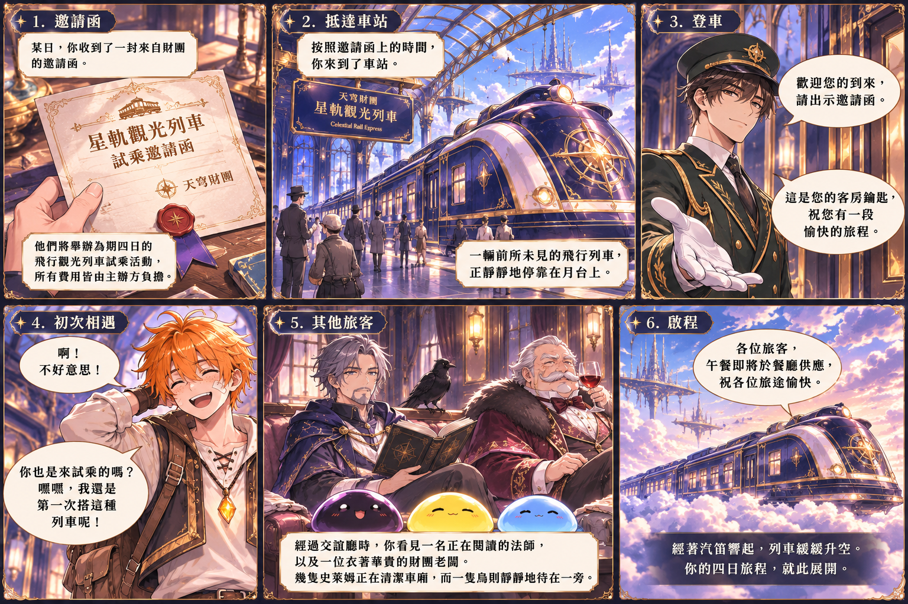

<!doctype html><html lang="zh-Hant"><meta charset="utf-8"><meta name="viewport" content="width=device-width,initial-scale=1"><title>星軌末班車</title><style>*{box-sizing:border-box}body{margin:0;background:#101820;color:#e8e2d4;font:16px/1.65 system-ui}main{max-width:1050px;margin:auto;padding:20px}h1,h2,h3{margin:0 0 10px}h1{font-family:serif;letter-spacing:.15em;color:#f2cf91}small,.muted{color:#aab9c1}button{font:inherit;color:inherit;background:#263846;border:1px solid #526773;border-radius:8px;padding:9px 13px;cursor:pointer;text-align:left}button:hover{background:#405563}button:disabled{opacity:.35;cursor:default}.panel{background:#192630;border:1px solid #344651;border-radius:12px;padding:16px;margin-bottom:12px}.grid{display:grid;grid-template-columns:220px 1fr;gap:14px}.actions{display:grid;gap:8px}.stats{display:flex;flex-wrap:wrap;gap:12px}.stat{flex:1;min-width:90px}.stat b{display:block;font-size:24px;color:#f2cf91}.map button{width:100%;margin:3px 0}.map .here{border-color:#e4b875;background:#54452e}.branch{padding-left:24px}.log{max-height:200px;overflow:auto;font-size:14px}.tag{display:inline-block;padding:3px 8px;margin:3px;background:#30424d;border-radius:5px}.danger{color:#ffad9b}.gold{color:#f2cf91}#modal{position:fixed;inset:0;background:#000b;display:none;place-items:center;padding:20px}#modal>div{width:min(480px,100%);background:#24343f;padding:24px;border:1px solid #ad966f;border-radius:14px}#die{font-size:65px;text-align:center;color:#f2cf91} @media(max-width:650px){.grid{grid-template-columns:1fr}.map{display:grid;grid-template-columns:1fr 1fr;gap:4px}.branch{padding:0}main{padding:12px}}.map{display:block!important;overflow:auto}.maprow{display:grid;grid-template-columns:repeat(2,minmax(105px,1fr));gap:5px;min-width:220px}.grid{grid-template-columns: minmax(250px,300px) 1fr}@media(max-width:650px){.grid{grid-template-columns:1fr}} .shock{background:#170509f5!important;z-index:99}.shock>div{border-color:#d55!important;background:#251016!important}.shock h1{color:#ff8d83;font-size:clamp(32px,8vw,64px)}.history{max-height:65vh;overflow:auto;white-space:pre-wrap}.tutorial{border-color:#9c8256}.tvisual{display:flex;align-items:center;justify-content:center;gap:10px;min-height:130px;background:#101820;border-radius:10px;padding:12px;flex-wrap:wrap}.tchip{border:1px solid #526773;background:#263846;padding:8px 12px;border-radius:8px;text-align:center}.tactive{border-color:#e4b875;background:#54452e}.tarrow{font-size:24px;color:#f2cf91}.tcontrols{display:flex;gap:8px;justify-content:space-between;flex-wrap:wrap;margin-top:12px}.tdots{color:#f2cf91;letter-spacing:5px;text-align:center}.tstack{display:grid;gap:5px}.tdie{font-size:30px;border:2px solid #e4b875;padding:12px 22px;clip-path:polygon(50% 0,100% 25%,100% 75%,50% 100%,0 75%,0 25%);background:#54452e}.tvisual small{display:block}.tutorial p{margin:8px 0}.diceface{width:110px;height:125px;margin:12px auto;display:block}.diceface.rolling{animation:tumble .65s ease-out}@keyframes tumble{0%{transform:rotate(-170deg) scale(.6)}100%{transform:rotate(360deg) scale(1)}}.buyrow{display:flex;align-items:center;gap:6px;flex-wrap:wrap;margin:8px 0}.buyrow b{min-width:35px;text-align:center}.buyrow button{padding:5px 9px} .voice{background:#080e20f5!important;z-index:100}.voice>div{border-color:#a5b9ef!important;background:#18233d!important;max-height:90vh;overflow:auto}.voice h1{color:#d3dfff}.voice blockquote{margin:16px 0;padding:12px;border-left:3px solid #a5b9ef;background:#222f4c;font-size:18px} .prologue>div{width:min(1200px,100%)!important;max-height:94vh;overflow:auto}.prologue{z-index:110;padding:8px!important}@media(max-width:650px){.grid>section{grid-row:1}.grid>aside{grid-row:2}}.role-heading{display:flex;align-items:baseline;justify-content:space-between;gap:12px}.game-version{white-space:nowrap;font-size:12px;color:#aab9c1;font-variant-numeric:tabular-nums}.npc-dot{display:inline-block;width:9px;height:9px;flex:0 0 9px;border-radius:50%;border:1px solid #aab9c1;vertical-align:middle}.npc-dots{display:inline-flex;gap:4px;flex-wrap:wrap;margin-left:5px;vertical-align:middle}.npc-legend{display:flex;flex-wrap:wrap;gap:4px 9px;font-size:11px;color:#aab9c1;margin-bottom:10px}.npc-legend>span{display:inline-flex;align-items:center;gap:4px}.map button:disabled .npc-dot{opacity:1}header{position:relative;padding-right:44px}#gameHelp{position:absolute;right:0;top:0;width:36px;height:36px;padding:0;display:grid;place-items:center;border-radius:50%}#gameHelp[hidden]{display:none}.scene-details{margin:8px 0 14px}.scene-details summary{cursor:pointer;color:#e8e2d4}.scene-toggle{display:block;color:#aab9c1;font-size:13px;margin:3px 0}.scene-toggle:after{content:"展開完整場景敘述"}.scene-details[open] .scene-toggle:after{content:"收起完整場景敘述"}.scene-full{white-space:pre-line;margin:10px 0 0;padding-top:10px;border-top:1px solid #344651}#bgmPanel{position:relative;margin:8px 0 14px;font-size:14px}#bgmPanel summary{cursor:pointer}#bgmPanel input[type=file]{max-width:100%;font-size:12px}#bgmPanel label{display:block;margin:6px 0}#bgmPanel input[type=range]{max-width:100%}.ap-notice{color:#f2cf91;border-left:3px solid #d6ad69;padding:8px 12px;background:#252d32;margin:10px 0;font-size:14px}</style><main><header><button id="gameHelp" hidden aria-label="操作教學" title="操作教學"><svg width="20" height="20" viewBox="0 0 24 24" fill="none" stroke="currentColor" stroke-width="1.8" stroke-linecap="round"><circle cx="12" cy="12" r="9"/><path d="M9.5 9a2.5 2.5 0 1 1 4 2c-1 .7-1.5 1.2-1.5 2.5"/><path d="M12 17h.01"/></svg></button><small>獨立設計實驗 · 離線單人</small><h1>星軌末班車</h1><p class="muted">雲端觀光列車 · 四日試乘之旅</p></header><details id="bgmPanel" class="panel"><summary>♫ 背景音樂設定</summary><button id="bgmToggle" aria-pressed="true">音樂：開</button><label>音量 <span id="bgmLevel"></span> <input id="bgmVolume" type="range" min="0" max="100" step="1"></label><small id="bgmStatus"></small></details><div id="app"></div></main><div id="modal"><div id="modalbody"></div></div><script>
// BGM settings are independent of the game save.
const bgm=(()=>{const key='startrain-bgm-v1';let cfg={enabled:true,volume:40};try{const x=JSON.parse(localStorage.getItem(key)||'{}');cfg={enabled:x.enabled!==false,volume:Number.isFinite(x.volume)?Math.max(0,Math.min(100,x.volume)):40}}catch{}
const tracks=['day','night'].map(()=>{const a=new Audio();a.loop=true;a.preload='none';a.volume=0;return a});const urls=['assets/bgm-day.ogg','assets/bgm-night.m4a'];tracks.forEach((a,i)=>{a.src=urls[i]});let desired=-1,epoch=0,unlocked=false;const status=['白天：Beautiful Piano','晚上：Clouds'];
function persist(){try{localStorage.setItem(key,JSON.stringify(cfg))}catch{}}
function ui(){const b=document.getElementById('bgmToggle');b.textContent=cfg.enabled?'音樂：開':'音樂：關';b.setAttribute('aria-pressed',String(cfg.enabled));document.getElementById('bgmVolume').value=cfg.volume;document.getElementById('bgmLevel').textContent=cfg.volume+'%';document.getElementById('bgmStatus').textContent=status.join(' ／ ')}
function mix(){const token=++epoch,target=cfg.enabled&&unlocked?desired:-1;const start=performance.now(),from=tracks.map(a=>a.volume);if(target>=0&&urls[target]){const a=tracks[target];a.play().catch(()=>{if(token===epoch){status[target]='播放未成功，請重新開啟音樂';ui()}})}function tick(now){if(token!==epoch)return;const t=Math.min(1,(now-start)/2000);tracks.forEach((a,i)=>{const goal=i===target&&urls[i]?cfg.volume/100:0;a.volume=Math.max(0,Math.min(1,from[i]+(goal-from[i])*t));if(t===1&&i!==target)a.pause()});if(t<1)requestAnimationFrame(tick)}requestAnimationFrame(tick)}
function sync(state){const next=state&&!state.end?(state.p>=3?1:0):-1;if(next!==desired){desired=next;mix()}}
function unlock(){if(!unlocked){unlocked=true;mix()}}
tracks.forEach((a,i)=>{a.onerror=()=>{status[i]='音樂載入失敗';ui()}});
document.getElementById('bgmToggle').onclick=()=>{cfg.enabled=!cfg.enabled;persist();ui();unlock();mix()};
document.getElementById('bgmVolume').oninput=e=>{cfg.volume=Number(e.target.value);persist();ui();mix()};

document.addEventListener('click',unlock,{once:true});ui();return {sync};})();

const roles={探勘者:{sense:3,mind:1,charm:0},學者:{sense:1,mind:3,charm:0},交涉者:{sense:0,mind:1,charm:3}};
const rooms={engine:['引擎室','熱浪迎面而來。鍋爐旁堆積著燒得通紅的煤炭，粗大的管線不斷震動，火星隨著熱氣升起。'],dining:['餐廳','銀器排列整齊，窗外的雲層逐漸染上暗紅。'],kitchen:['廚房','刀具懸在半空，砧板上傳來規律的切割聲。'],hall:['交誼廳','柔軟的沙發圍著矮桌，供旅客彼此交流。牆上掛著一系列肖像，窗邊擺著一架鋼琴。'],corr:['走廊1','第一扇客房門旁掛著銅牌。'],own:['房間1（自己）','床鋪、地毯與一張小桌。'],corr2:['走廊2','走廊的燈光微微晃動。'],mageRoom:['房間2（法師）','桌上堆著筆記與星圖。'],corr3:['走廊3','門旁放著一雙旅行靴。'],boyRoom:['房間3（冒險者）','背包與旅行用品散落在床邊。'],corr4:['走廊盡頭','牆面看似完整，卻有一道細微接縫。'],boss:['房間4（財團老闆）','昂貴的家具與一疊商業文件。'],shrine:['祈禱室','黑色圓形祭壇中央有三處凹槽。']};
const schedules={mage:['mageRoom','dining','hall','mageRoom','mageRoom'],boy:['hall','dining','corr3','boyRoom','boyRoom'],boss:['boss','dining','hall','boss','boss']};
const names={mage:'法師',boy:'冒險者',boss:'財團老闆'};
function isDead(n){return !!s.flags[n+'Dead']}
function isCaptured(n){return s.flags.ballSlime===n}
function alive(n){return !isDead(n)&&!isCaptured(n)}

function present(n){return npcRoom(n)===s.loc}
const phases=['早晨','午間','午後','夜晚','午夜'];const budgets=[5,4,5,4,7];const key='startrain-experiment-4';let s=null,snap=null,pending=null;
const metaKey='startrain-meta-v1';let meta={finished:false,points:0,ach:[]};try{Object.assign(meta,JSON.parse(localStorage.getItem(metaKey)||'{}'))}catch{}let mode='normal',build=[5,5,5];const attrKeys=['sense','mind','charm'];const mod=v=>v>=5?v-5:Math.ceil((v-5)/2);const left=()=>21+meta.points-build.reduce((a,b)=>a+b,0);function storeMeta(){localStorage.setItem(metaKey,JSON.stringify(meta))}

function award(id){s.ach ||= [];if(s.ach.includes(id))return;s.ach.push(id);s.luck+=5;log('成就解鎖：'+id+'（幸運 +5）');if(!meta.ach.includes(id)){meta.ach.push(id);meta.points++;storeMeta()}}

function diceSvg(n){return '<svg class="diceface rolling" viewBox="0 0 110 125"><g stroke="#a68b5c" stroke-width="1.5" stroke-linejoin="round"><path d="M55 3 100 35 107 65 55 122 3 65 10 35Z" fill="#344b60"/><path d="M55 3 10 35 55 25Z" fill="#b7d1dc"/><path d="M55 3 100 35 55 25Z" fill="#7598ac"/><path d="M10 35 3 65 30 85 55 25Z" fill="#42677d"/><path d="M100 35 107 65 80 85 55 25Z" fill="#294557"/><path d="M55 25 80 85 55 105 30 85Z" fill="#638da5"/><path d="M3 65 55 122 55 105 30 85Z" fill="#243b4b"/><path d="M107 65 55 122 55 105 80 85Z" fill="#172e40"/></g><text x="55" y="76" text-anchor="middle" font-size="29" font-weight="bold" fill="white">'+n+'</text></svg>'}const copy=x=>JSON.parse(JSON.stringify(x));const $=id=>document.getElementById(id);const has=x=>s.items.includes(x);const knows=x=>s.clues.includes(x);let audio;function sound(k){try{audio ||= new (window.AudioContext||window.webkitAudioContext)();audio.resume();let seq={click:[440],piano:[262,330,392,523,392,330,262],item:[523,659,784],clue:[392,587],death:[180,90],night:[330,220,165],rewind:[220,440,880,330]}[k];seq.forEach((f,i)=>{let o=audio.createOscillator(),g=audio.createGain(),t=audio.currentTime+i*.12;o.type=k==='death'?'triangle':'sine';o.frequency.value=f;g.gain.setValueAtTime(.07,t);g.gain.exponentialRampToValueAtTime(.001,t+.25);o.connect(g);g.connect(audio.destination);o.start(t);o.stop(t+.26)})}catch{}}document.addEventListener('click',e=>{if(e.target.closest('button'))sound('click')});const dreams=['守護旅者的塞萊斯蒂安大人，請用您神聖的血液保護旅者、用飽含星辰的心指引迷途、用純潔如寶石般的靈魂淨化罪惡。','神需要虔誠的心臟、新鮮的血液、跟人的靈魂。','會動的裝飾，沒有靈魂。','安置於瓶中的陳釀，是神聖的血液。','繪滿航向的心臟，藏於熔岩之中。','黑色的圓鑰匙可以打開祭壇。'];function normal(){return s.day===1&&!s.flags.staffDead&&!s.flags.awakened}

function log(x){if(activeNpc)npcResult+=(npcResult?'\n':'')+x;else s.current=(s.current||'')+'\n'+x;s.log.unshift(x);s.log=s.log.slice(0,500)}

function clue(x){if(!knows(x)){s.clues.push(x);if(s.clues.length>=5)award('追尋真相');sound('clue');log('記下線索：'+x)}}

function item(x){if(x==='乖乖'||!has(x)){s.items.push(x);if(new Set(s.items).size>=5)award('旅行收藏家');sound('item');log('取得：'+x)}}

const SAVE_SCHEMA=1;
function validState(x){return !!x&&typeof x==='object'&&Number.isInteger(x.day)&&x.day>=1&&x.day<=4&&Number.isInteger(x.p)&&x.p>=0&&x.p<=4&&Number.isFinite(x.ap)&&x.ap>=0&&Object.hasOwn(rooms,x.loc)&&Array.isArray(x.items)&&Array.isArray(x.clues)&&Array.isArray(x.log)&&!!x.flags&&typeof x.flags==='object'}
function decodeSave(raw){const x=JSON.parse(raw);if(!x||(x.schema!==undefined&&x.schema!==SAVE_SCHEMA)||!validState(x.s)||!validState(x.snap))throw Error('存檔格式不相容');return x}
function save(){localStorage.setItem(key,JSON.stringify({schema:SAVE_SCHEMA,s,snap}))}

function start(role){activeNpc=null;s={role,day:1,p:1,ap:4,hp:8,san:10,luck:4,statues:0,loc:'dining',items:[],clues:[],flags:{keyRoom:['own','mageRoom','boyRoom','boss'][Math.floor(Math.random()*4)]},trust:{mage:0,boy:0,boss:0},log:["你踏上列車，一名身穿深綠色制服、戴著白色手套的乘務員微笑著迎接你。在確認你的邀請函後，他將客房鑰匙交給你，並簡單介紹了列車上的設施。\n\n安置好行李後，你來到了餐廳車廂。\n\n車廂內鋪設著深色的木質地板，兩側整齊排列著餐桌與柔軟的座椅。潔白的桌巾上擺放著銀製餐具與晶瑩剔透的玻璃杯，金色的壁燈與木質雕花相互映襯，大片車窗讓陽光灑入室內。\n\n空氣中瀰漫著淡淡的食物香氣。\n\n一名橘髮少年坐在餐桌旁，好奇地打量著車廂內的裝飾；一位身穿深藍色長袍的法師正低頭翻閱手中的書籍；另一名衣著華貴的年長男子則獨自坐在靠窗的位置。\n\n幾隻圓滾滾的史萊姆在桌椅之間穿梭，有的正在擦拭桌面，有的正在清理地板。其中一隻黑色史萊姆身旁放著一個裝滿綠色乖乖的籃子，籃子前還立著一塊小小的販售告示牌。\n\n餐廳前方，幾件衣物與白色手套懸浮在半空中，端著盛有餐點的托盤，在餐桌之間來回移動。\n\n上午十一時，伴隨著一聲悠長的汽笛，列車緩緩駛離月台。窗外的景色逐漸向下遠去，列車平穩地升上天空，朝著遠方的雲層駛去。\n\n午餐已經準備妥當，你可以自由用餐、與其他旅客交談，或是探索這輛列車。\n\n為期四天四夜的觀光之旅，正式開始了。"],end:null};s.flags.heartRoom=['own','mageRoom','boyRoom','boss'][Math.floor(Math.random()*4)];s.mode=mode;s.ach=[];s.damageTotal=0;s.mealRecord=[];if(meta.ach.includes('皮皮皮皮皮'))s.items.push('寶可球');s.rewinds=0;s.sleeps=0;s.tenStreak=0;if(role==='自訂旅客'){s.custom=Object.fromEntries(attrKeys.map((k,i)=>[k,mod(build[i])]));s.luck=left()}snap=copy(s);save();render()}

function voicePopup(lines,after=()=>{}){if(!lines.length){after();return}pending=true;sound('clue');const m=$('modal');m.classList.remove('shock');m.classList.add('voice');$('modalbody').innerHTML='<small>神秘的聲音</small><h1>你聽見了……</h1><p>陌生的低語在你的意識中響起。</p>'+lines.map(x=>'<blockquote>'+x+'</blockquote>').join('')+'<button id="voiceAck">我聽見了，繼續</button>';m.style.display='grid';$('voiceAck').onclick=()=>{pending=null;m.classList.remove('voice');m.style.display='none';after();render()}}

function rewind(reason,forced=false){activeNpc=null;if(!forced&&!s.statues&&s.mode!=='infinite'){end('航向地獄',reason+'。最後的保護已消失。');return}let old=s;s=copy(snap);s.mode=old.mode;s.ach=old.ach||[];s.rewinds=(old.rewinds||0)+1;s.damageTotal=old.damageTotal||0;s.sleeps=old.sleeps||0;s.tenStreak=old.tenStreak||0;s.statues=old.mode==='infinite'?3:Math.max(0,old.statues-1);s.flags.awakened=true;s.luck=old.luck;s.clues=old.hp>0?old.clues:s.clues;s.san=old.hp>0?old.san:s.san;s.log=old.log;sound('rewind');let heard=old.hp>0?dreams.slice(0,Math.min(dreams.length,Math.max(1,s.rewinds)*2)):[];heard.forEach(clue);log('你發現自己回到了今天剛起床的時候。');award('第一次折返');if(s.rewinds>=10)award('似曾相識');if(!s.statues&&s.mode!=='infinite')award('神也救不了你');save();render();pending=true;$('modal').classList.add('shock');$('modalbody').innerHTML='<h1>似曾相識</h1><p>你猛然睜開眼睛，發現自己回到了今天剛起床的時候。方才發生的一切，彷彿從未發生。</p><button id="rewindAck">繼續</button>';$('modal').style.display='grid';$('rewindAck').onclick=()=>{pending=null;$('modal').classList.remove('shock');$('modal').style.display='none';voicePopup(heard)}}

function hurt(n,m=0){s.hp-=n;s.san=Math.max(0,s.san-m);if(s.hp<=0){award('好奇心害死貓');sound('death');rewind('你已死亡');return true}return false}const extraAchievements={'你才是反派吧？':'親手殺死除乘務員以外的七名 NPC，成為邪神的使徒。','戰鬥爽':'本局累計對敵人造成至少20點傷害。','皮皮皮皮皮':'成功召喚二十四隻皮卡丘。解鎖後，新遊戲初始獲得寶可球。','饕餮':'吃完旅程中所有供應的早餐、午餐與晚餐（首日無早餐）。'};const achievementDetails={"旅程的終點":"完成任意一個遊戲結局。","第一次折返":"首次經歷時間回朔。","追尋真相":"累積五條不同的線索。","旅行收藏家":"同時持有五種不同物品。","星光歸航":"完成正確的祭壇儀式，讓列車返航。","一命通關":"未經任何回朔，達成星光歸航。","神也救不了你":"在一般模式中耗盡三尊女神像。","乾杯！":"喝下神聖之血。","乖孩子":"將乖乖餵給列車長。","天生倒楣":"幸運值為零時擲出自然 1。","天選之人":"連續三次檢定擲出自然 10。","凡人之軀":"以三項屬性皆為 −5 的自訂旅客達成星光歸航。","好奇心害死貓":"在旅程中死亡。","你怎麼還不睡":"從未睡眠，並在第四天午夜迎來結局。","我全都要":"同時發現廚房與隱藏祈禱室。","似曾相識":"同一局經歷至少十次回朔。","錯誤的信仰":"使用無法引發回應的祭品組合啟動祭壇。","列車墜毀":"殺死列車長後迎來墜落結局。","睡死":"連續睡眠四晚，且整局未曾回朔。","被富豪殺死":"第四天傍晚遭財團老闆的襲擊致死。"};Object.assign(achievementDetails,extraAchievements);const achievementHints={"你才是反派吧？":"或許，邪神選錯了人。","旅程的終點":"每一趟旅程都有終點。","第一次折返":"有些早晨似曾相識。","追尋真相":"別放過任何蛛絲馬跡。","旅行收藏家":"背包裡總能再塞點東西。","星光歸航":"迷途的旅人需要星光。","一命通關":"有些旅程不需要重來。","神也救不了你":"庇護並非取之不盡。","乾杯！":"有些酒值得親口品嚐。","乖孩子":"誰說熔岩不喜歡零食？","天生倒楣":"連幸運都拋棄了你。","天選之人":"好運能連續降臨幾次？","凡人之軀":"一無所長，也能走到終點嗎？","好奇心害死貓":"有些危險值得親身體會。","你怎麼還不睡":"四個夜晚，你能一直醒著嗎？","我全都要":"列車上還有未曾踏足的地方。","似曾相識":"同樣的早晨，究竟要經歷幾次？","錯誤的信仰":"神不一定會回應每一份供品。","列車墜毀":"誰在維持列車的飛行？","睡死":"好好睡覺，也是一種才能。","被富豪殺死":"有錢人不一定是好人。","戰鬥爽":"拳頭比言語更有說服力。","皮皮皮皮皮":"據說神喜歡黃色的生物。","饕餮":"一日三餐，一頓也不能少。"};function showAchievement(x){const m=$('modal');m.classList.remove('shock','voice');$('modalbody').innerHTML='<small>成就詳情</small><h2 class="gold">🏆 '+x+'</h2><p>'+ (achievementDetails[x]||'此成就已解鎖。')+'</p><p>本局首次達成：幸運 +5<br>帳號首次解鎖：永久購點 +1</p><button id="closeAchievement">返回結算</button>';m.style.display='grid';$('closeAchievement').onclick=()=>m.style.display='none'}

function end(title,desc){meta.finished=true;award('旅程的終點');if(title==='星光歸航'){award('星光歸航');if(!s.rewinds)award('一命通關');if(s.custom&&Object.values(s.custom).every(v=>v===-5))award('凡人之軀')}if(title==='墜落'&&s.flags.crash)award('列車墜毀');if(s.day===4&&s.p===4&&!(s.sleeps||0))award('你怎麼還不睡');storeMeta();s.end={title,desc};save();render()}const combatants={staff:['乘務員',3,5,1],mage:['法師',6,8,3],boy:['冒險者',5,7,2],boss:['財團老闆',5,7,2],captain:['列車長',6,8,2],wu:['烏',5,7,2],slime:['史萊姆',4,6,1],chef:['無形廚師',5,8,2]};function allPlayerKills(flags){return !!flags.staffDead&&Object.keys(combatants).filter(n=>n!=='staff').every(n=>flags[n+'Dead']&&flags.playerKills?.[n]===true)}
function kill(n,loc,byPlayer=false){if(!alive(n))return;s.flags[n+'Dead']=true;if(byPlayer){s.flags.playerKills ||= {};s.flags.playerKills[n]=true}s.flags.deathToday=true;s.corpses ||= {};s.corpses[n]={loc,looted:false};log(combatants[n][0]+'死亡。');if(n==='captain'){s.flags.crash=true;item('星盤')}if(n==='wu')s.flags.carryWu=false;if(n==='staff'){if(!s.flags.awakened){s.flags.awakened=true;s.statues=3}if(alive('mage'))log('法師準備在交誼廳祈禱。')}if(!s.end&&byPlayer&&allPlayerKills(s.flags)){award('你才是反派吧？');end('邪神的使徒','隨著最後一名乘客倒下，列車陷入了死寂。\n\n一道熟悉的聲音再次於你的腦海中響起。\n\n「有趣……」\n「我原以為那個富有的蠢貨才是最適合的人選。」\n「但你做得比他更好。」\n「跪下吧，凡人。我將賜予你侍奉我的資格。」\n\n窗外的星辰逐漸熄滅，漆黑的天空中，一道巨大的裂隙緩緩張開。\n\n這趟旅程結束了。\n而你的另一段旅程，才剛剛開始。')}}

function combatUnlocked(){return !!s.flags.staffDead}
function attack(n){if(!combatUnlocked()||!present(n)||pending||s.end)return;let [name,hp,dc,dmg]=combatants[n];s.nhp ||= {};const cost=s.flags.combatTarget===n?0:2;function counter(){log(name+'反擊，你受到 '+dmg+' 點傷害。');if(!hurt(dmg))log('你仍可繼續攻擊，或返回場景停止戰鬥。')}check(cost,'sense',dc,()=>{s.flags.combatTarget=n;s.damageTotal=(s.damageTotal||0)+Math.min(2,Math.max(0,s.nhp[n]??hp));if(s.damageTotal>=20)award('戰鬥爽');s.nhp[n]=(s.nhp[n]??hp)-2;log('攻擊命中。'+name+(s.nhp[n]<=0?'倒下了。':s.nhp[n]<=2?'看起來十分虛弱。':'受到明顯傷害。'));if(s.nhp[n]<=0){delete s.flags.combatTarget;kill(n,s.loc,true)}else counter()},()=>{s.flags.combatTarget=n;counter()})}

function loot(n){const target=s.corpses?.[n];if(!target||target.looted||target.loc!==s.loc)return;act(1,()=>{let corpse=s.corpses[n];corpse.looted=true;log('你調查了'+combatants[n][0]+'的遺體。');if(['staff','mage','boy','boss'].includes(n))item('人類血液');if(n==='mage')item('人類心臟');if(n==='boy')item('靈魂吊墜')})}

const scheduledMurders=[{day:2,victim:'mage'},{day:3,victim:'boy'}];
function runScheduledMurders(){if(s.p!==3||!alive('boss'))return;for(const event of scheduledMurders){if(s.day===event.day&&alive(event.victim)){sound('death');kill(event.victim,npcRoom(event.victim))}}}
function advance(){let heard=[];delete s.flags.combatTarget;activeNpc=null;if(s.end)return;s.current='';if(s.p===3&&s.statues&&s.loc!=='own'){rewind('午夜未返回自己的房間');return}if(s.p===4){if(s.flags.sleep&&!s.flags.finalDreamShown){s.sleeps=(s.sleeps||0)+1;s.sleepStreak=(s.sleepStreak||0)+1;if(s.sleepStreak>=4&&!s.rewinds)award('睡死')}else s.sleepStreak=0;let dream=s.flags.sleep?[dreams[(s.day-1)%dreams.length],dreams[(s.day+1)%dreams.length]]:[];if(s.flags.crash){end('墜落','失去列車長的引擎無法維持飛行。');return}if(s.day===4&&dream.length&&!s.flags.finalDreamShown){s.flags.finalDreamShown=true;dream.forEach(clue);save();voicePopup(dream,()=>{s.flags.sleep=false;advance()});return}if(s.day===4){end('最後一站',s.flags.open?'祭壇雖已開啟，但儀式未完成，邪神奪走了旅客的靈魂。':'第四夜結束，祭壇仍未開啟。邪神奪走了你的靈魂，無論是否在戰鬥中存活。');return}s.flags.meatToday=!!s.flags.deathToday;delete s.flags.deathToday;s.day++;s.p=0;delete s.flags.boyRest;delete s.flags.boyFollowing;s.ap=budgets[0];if(s.flags.sleep){s.hp=Math.min(8,s.hp+3);s.san=Math.min(10,s.san+1)}else{s.san=Math.max(0,s.san-1)}delete s.flags.sleep;delete s.flags.nightSeen;log('第 '+s.day+' 天清晨，時間錨點更新。');if(dream.length){log('夢中，兩道陌生的聲音先後響起：');dream.forEach(clue);heard=dream}snap=copy(s)}else{s.p++;s.ap=budgets[s.p];delete s.flags.boyRest;if(s.p===4&&boyFollowing()){delete s.flags.boyFollowing;log('少年向你道別，返回自己的房間休息。')}if(s.day===1&&s.p===3&&alive('staff')){log('傍晚，乘務員突然死亡。');sound('death');kill('staff','hall');if(!s.flags.awakened){s.statues=3;s.flags.awakened=true}}runScheduledMurders();if(s.p===3)sound('night');if(s.p===3&&s.day===4&&alive('boss')){log('傍晚，財團老闆向你發動攻擊！');s.flags.bossFight=true;save();render();check(0,'sense',8,()=>{log('你避開富豪的攻擊，暫時脫身。');s.flags.bossFight=false},()=>{log('富豪擊傷了你。');s.flags.bossFight=false;if(s.hp<=4)award('被富豪殺死');hurt(4,2)});return}if(s.p===1&&s.day>1&&s.flags.meatToday)log('午餐時又有一張座位空了。');if(s.p===4){s.corpses={};log(s.statues?'房門被女神的法術封住。':'午夜，史萊姆解除偽裝，車廂自行修整。');}}save();render();if(heard.length){voicePopup(heard);return}if(s.day===1&&s.p===3&&s.flags.staffDead&&!s.flags.deathShown){s.flags.deathShown=true;save();shock()}}
function shock(){pending=true;const m=$('modal');m.classList.add('shock');$('modalbody').innerHTML='<small>第一天 · 18:00</small><h1>乘務員死亡</h1><p>砰！一聲巨響震動整節車廂。</p><p>乘務員倒在地上，再也沒有回應。交誼廳的談笑聲戛然而止。</p><p>法師匆匆趕來，神情凝重。</p><button id="ack">繼續</button>';m.style.display='grid';sound('death');$('ack').onclick=()=>{pending=null;m.classList.remove('shock');m.style.display='none';render()}}

function canSpend(n){return !!s&&Number.isInteger(n)&&n>=0&&s.ap>=n&&!pending&&!s.end}
function spend(n){if(!canSpend(n))return false;s.current='';s.ap-=n;return true}

function finish(){if(visible('kitchen')&&visible('shrine'))award('我全都要');save();render();if(!s.end&&!pending&&!activeNpc&&s.ap===0&&!(s.p===3&&s.loc!=='own'))advance()}

function act(n,fn){if(!spend(n))return;fn();finish()}

function check(n,attr,dc,success,fail){if(!spend(n))return;let raw=1+Math.floor(Math.random()*10),bonus=(s.custom||roles[s.role])[attr]-(s.san<=3?2:0),total=raw+bonus,need=Math.max(0,dc-total);if(raw===1&&s.luck===0)award('天生倒楣');s.tenStreak=raw===10?(s.tenStreak||0)+1:0;if(s.tenStreak>=3)award('天選之人');function resolve(ok){$('modal').style.display='none';pending=null;log('檢定 '+total+' / '+dc+(ok?' 成功':' 失敗'));(ok?success:fail)();finish()}pending=true;if(total>=dc){$('modalbody').innerHTML='<small>擲骰檢定</small>'+diceSvg(raw)+'<p>總值 '+total+' / '+dc+' · 成功</p>';$('modal').style.display='grid';setTimeout(()=>resolve(true),750);return}$('modalbody').innerHTML=`<small>檢定失敗 · 目標 ${dc}</small>${diceSvg(raw)}<p>總值 ${total}，尚差 ${need} 點</p><button id="boost" ${s.luck<need?'disabled':''}>消耗 ${need} 幸運值換取成功</button> <button id="resolve">接受失敗</button>`;$('boost').onclick=()=>{if(s.luck>=need){s.luck-=need;total+=need;resolve(true)}};$('resolve').onclick=()=>resolve(false);$('modal').style.display='grid'}
function accessible(id){return id!=='kitchen'||has('廚房鑰匙')||s.flags.kitchen}

function visible(id){return accessible(id)&&(id!=='shrine'||knows('隱藏祈禱室'))}const edges={engine:['dining'],dining:['engine','hall','kitchen'],kitchen:['dining'],hall:['dining','corr'],corr:['hall','own','corr2'],own:['corr'],corr2:['corr','mageRoom','corr3'],mageRoom:['corr2'],corr3:['corr2','boyRoom','corr4'],boyRoom:['corr3'],corr4:['corr3','boss','shrine'],boss:['corr4'],shrine:['corr4']};
function move(id){activeNpc=null;delete s.flags.combatTarget;if(!edges[s.loc].includes(id)||!visible(id)||s.p===4&&s.statues)return;if(id==='boyRoom'&&boyLocked()){log('冒險者的房門上鎖了。你可以在走廊敲門。');finish();return;}act(1,()=>{s.loc=id;if(id==='engine'){log(!alive('captain')?'煤火仍在燃燒，但鍋爐旁已不見列車長的身影。':s.flags.snackDisk?'列車長瞥了你一眼，便繼續維持煤火，沒有再阻攔你。':'一團比你還高大的熔岩史萊姆從煤火中轉過身來。牠發出低沉的咕嚕聲，直直朝你逼近。熱浪迫使你後退，牠卻絲毫沒有停下的意思。')}if(s.p===4&&!s.statues&&id!=='own'&&Math.random()<.25){log('凝膠怪從牆角撲來。');hurt(2,1)}})}
function choose(title,options){$('modalbody').innerHTML='<h3>'+title+'</h3>'+options.map((x,i)=>`<button data-choice="${i}">${x[0]}</button> `).join('')+'<button id="cancelChoice">取消</button>'; $('modal').style.display='grid';document.querySelectorAll('[data-choice]').forEach(b=>b.onclick=()=>{$('modal').style.display='none';options[+b.dataset.choice][1]()});$('cancelChoice').onclick=()=>$('modal').style.display='none'}
function useItem(){if(!s.items.length){log('背包沒有可使用的物品。');render();return}choose('選擇使用的物品',[...new Set(s.items)].map(x=>[x,()=>{if((s.flags.altar||[]).includes(x)){log('物品仍在祭壇上，請先取回。');render();return}if(x==='寶可球'){let captured=s.flags.ballSlime;if(captured){act(1,()=>{delete s.flags.ballSlime;log('寶可球打開，'+combatants[captured][0]+'重新出現在你面前。');if(captured==='wu'){s.flags.wuLoc=s.loc;s.flags.carryWu=false}else if(captured==='slime')s.flags.ballReleasedLoc=s.loc});return}let targets=['wu','slime','captain'].filter(present);if(!targets.length){log('附近沒有可以收服的史萊姆。');render();return}choose('選擇收進寶可球的史萊姆',targets.map(n=>[combatants[n][0],()=>act(1,()=>{s.flags.ballSlime=n;if(n==='wu')s.flags.carryWu=false;log(combatants[n][0]+'被收進寶可球。')})]));return}if(x==='乖乖'){act(1,()=>{s.items.splice(s.items.indexOf(x),1);log('你撕開包裝，奶油與玉米的甜香撲鼻而來。入口酥脆，指尖沾上些許粉末。')});return}if(x==='佳釀'||x==='神聖之血'){choose('要喝下這瓶酒嗎？',[['喝下',()=>act(1,()=>{if(x==='神聖之血')award('乾杯！');s.items=s.items.filter(v=>v!==x);s.san=Math.min(10,s.san+2);log(x==='佳釀'?'酒液微甜，成熟果香伴著橡木氣息，暖意沿喉嚨散開。':'酒液清甜，帶著莓果香，餘韻清爽悠長。');log('理智最多恢復 2 點。')})]]);return}if(s.loc==='shrine'&&x==='黑色圓鑰匙'){if(s.flags.open){log('封印已經解除。');render();return}act(1,()=>{s.flags.open=true;log('圓石嵌入牆面，封印無聲消散。')});return}log(x+' 在此處無法使用。沒有消耗行動力或物品。');render()}]))}
const diningBooks=[["《星辰與漫遊者之神》","遊戲內虛構書籍",""],["《銀河鐵道之夜》","宮澤賢治","少年喬凡尼與好友康帕內拉搭上行駛於銀河中的神秘列車，沿途遇見不同旅客，思考生命、死亡、犧牲與真正的幸福。"],["《東方快車謀殺案》","阿嘉莎・克莉絲蒂","豪華列車因大雪停駛，一名乘客在包廂內遭殺害。偵探白羅調查乘客證詞與矛盾線索，揭開案件真相。"],["《環遊世界八十天》","儒勒・凡爾納","英國紳士福格為一場賭約與僕人踏上八十天環遊世界的旅程，搭乘列車與輪船，克服意外並與時間競賽。"],["《小王子》","安托萬・德・聖修伯里","來自小行星的少年造訪不同地方，遇見形形色色的人，逐漸理解陪伴、責任、愛與離別。"],["《時間機器》","赫伯特・喬治・威爾斯","發明家乘坐時間機器前往遙遠未來，見識人類文明的變化，作品探討時間旅行、社會階級與文明發展。"]],celestianChapters=[["神祇簡介","塞萊斯蒂安（Celestian），又稱遠行者與星辰漫遊者，源自奧斯（Oerth）的神系。祂是居於星界的次等神祇，受到位面旅人與太空漫遊者敬仰。"],["外貌與聖徽","祂常被描繪為高大的年長男子，肌膚與眼睛皆為深色，身披布滿星辰的黑袍，行動迅捷而無聲，極少以實體現身。聖徽是黑色圓形中的七顆星，由紫水晶、鑽石、祖母綠、風信子石、紅寶石、藍寶石與黃玉構成。"],["神力","祂能施展旅行與移動相關的法術，隨意穿越星界及其相鄰位面。七種特殊神力包括傷敵的極光、召喚彗星、熱閃電、流星雨、如太空般的寒冷、由雙眼射出的星辰白光，以及震耳雷聲。這七種力量只能在戶外施展。"],["武器與隨身物品","祂擁有多種魔法武器，包括長弓、可改變長度的長矛、短劍、可投擲的戰斧與不會折斷的匕首。信徒認為短矛是祂偏愛的武器。"],["信徒與教團","信徒多為善良或中立的漫遊者、學者、領航員、天文學家與占星家。教團分為七個階序，各有不同顏色的袍服與聖徽中央寶石，外披綴有寶石的黑斗篷。祭司重視學習與旅行，必須長期離家，擅長天文及導航。儀式於夜晚露天舉行，以可見星辰為佳。教團少建神殿，但在星界設有旅人休息處；布拉爾的泛神學院是例外，視其他世界善良的星辰神祇為塞萊斯蒂安的不同面向。"],["神域","祂沒有固定神域，而是在星界四處旅行，偶爾前往以太位面與內層位面。祂的祈並者成為黑袍上的星辰，最終融入祂的本質。"],["神祇與教團關係","祂與許多旅行神祇交好，尤其與兄弟 Fharlanghn 結盟，並協助其拓展至奧斯以外的位面。祂能召喚數名星界神使協助。教團與 Seekers 結盟，與普塔（Ptah）教會對立。"],["歷史","約在谷地曆十一世紀，一名來自灰色太空的巡遊祭司將信仰帶到布拉爾岩，教團逐漸興盛。動盪之年，祂為償還人情，協助化為凡人的渥金（Waukeen）離開托瑞爾前往星界，但拒絕同行的莉拉（Lliira）。至谷地曆十三世紀末，跨位面的信徒日益增加，部分學者推測祂可能升為強大神祇。"]];
function diningInvestigation(){check(2,'sense',6,()=>{if(s.p===1){const absent=['mage','boy','boss'].filter(n=>npcRoom(n)!=='dining').map(n=>names[n]);log(absent.length?'你環顧餐廳，注意到有些旅客沒有來用餐：'+absent.join('、')+'。':'你環顧餐廳，受邀的旅客似乎都已到齊。')}else{s.flags.bookshelf=true;log('你注意到餐廳角落擺放著一座小型書架，上面收藏了幾本與旅行、星辰及列車有關的書籍。')}},()=>log('你查看了餐具、菜單與座位名牌，沒有發現其他值得注意的細節。'))}
function openBookshelf(){if(s.loc!=='dining'||!s.flags.bookshelf)return;choose('餐廳書架',diningBooks.map((b,i)=>[b[0]+(s.flags.booksRead?.[i]?'（已讀）':' · 1 AP'),()=>readDiningBook(i)]))}
function showDiningBook(i){const b=diningBooks[i];$('modalbody').innerHTML='<h3>'+b[0]+'</h3><small>'+b[1]+'</small><div class="history">'+(i===0?celestianChapters.map(x=>'<details><summary>'+x[0]+'</summary><p>'+x[1]+'</p></details>').join('')+'<p><small>資料改寫自 <a style="color:inherit" href="https://forgottenrealms.fandom.com/wiki/Celestian" target="_blank" rel="noopener noreferrer">Forgotten Realms Wiki — Celestian</a>（CC BY-SA，依原頁標示；中文改寫）</small></p>':'<p>'+b[2]+'</p>')+'</div><button id="bookBack">返回書架</button> <button id="bookClose">關閉</button>';$('modal').style.display='grid';$('bookBack').onclick=openBookshelf;$('bookClose').onclick=()=>{$('modal').style.display='none'}}
function readDiningBook(i){if(s.loc!=='dining'||!s.flags.bookshelf)return;if(s.flags.booksRead?.[i]){showDiningBook(i);return}if(!spend(1)){openBookshelf();return}s.flags.booksRead ||= {};s.flags.booksRead[i]=true;log('你閱讀了'+diningBooks[i][0]+'。');if(i===0)clue('塞萊斯蒂安是星界漫遊者之神，聖徽為七顆寶石構成的星辰。');pending=true;finish();pending=null;showDiningBook(i);const close=$('bookClose');close.onclick=()=>{$('modal').style.display='none';finish()};$('bookBack').onclick=()=>{if(s.ap===0){$('modal').style.display='none';finish()}else openBookshelf()}}

function investigate(){let loc=s.loc;if(loc==='dining'){diningInvestigation();return;}if(normal()){act(2,()=>{log(({engine:'煤炭燒得通紅，鍋爐的儀表規律跳動，管線傳來沉重的震動聲。',hall:'牆上掛著精緻的肖像，沙發柔軟舒適。窗邊的鋼琴擦拭得十分乾淨。',dining:'桌上擺著銀器、餐巾與今日菜單。',own:'床鋪整潔，地毯柔軟，窗邊備有旅行指南。',mageRoom:'桌上擺著旅行筆記。',boyRoom:'旅行袋裡放著換洗衣物。',boss:'桌上擺著公司簡介。',corr4:'走廊末端裝飾著木質牆板。'})[loc]||'車廂整潔，沒有特別值得注意的地方。')});return}let yes=()=>{switch(loc){case 'engine':log('你忍著熱浪沿鍋爐旁的管線查看，在控制台下發現一枚刻滿星辰的古老圓盤。');item('星盤');break;case 'hall':log('你凝視唯一不動的肖像。畫中人終於閉上眼，嘴裡落下一顆寶石。');item('靈魂之石');break;case 'kitchen':log('冷藏櫃裡只有魚蝦，沒有肉類。酒櫃深處有一瓶陳釀。');item('佳釀');clue('地板上的法陣似乎約束著無形的廚師。');break;case 'corr4':log('牆上的接縫形成門的輪廓，卻找不到把手。');clue('隱藏祈禱室');break;case 'own':case 'mageRoom':case 'boyRoom':case 'boss':log('你掀起地毯，摸索床底與家具縫隙。');if(loc===(s.flags.heartRoom||'mageRoom'))item('人類心臟');if(loc===s.flags.keyRoom&&!has('黑色圓鑰匙')){log('地毯下藏著一枚冰冷的黑色圓石。');item('黑色圓鑰匙')}else if(loc==='own'||loc==='boss'){clue('隱藏祈禱室');log('一張舊配置圖標出列車末端多出的一節車廂。')}else log(loc==='mageRoom'?'筆記記錄著不同星辰的航向。':'旅行袋裡只有換洗衣物與乾糧。');break;case 'dining':log('餐具上刻著列車公司的徽記。每張座位都配有名牌。');break;default:log('你仔細查看牆面與地板，沒有發現其他異常。')}};check(2,'sense',loc==='engine'?8:6,yes,()=>log('你仔細翻找了一遍，仍未能辨認出有用的細節。'))}
const dialogue={mage:[],boy:[['自我介紹','「啊、你好！你也是冒險者嗎？我是第一次搭這種列車……嘿嘿，有點興奮。」少年不好意思地搔了搔頭。'],['史萊姆','「牠們有自己的語言喔！你仔細聽，咕嚕聲其實不完全一樣。啊……我是不是講得太快了？」'],['匕首','少年摸了摸腰間的刀鞘。「這個？出門前特地買的！不過到現在還沒真的用過就是了……」'],['旅行用品','少年慌忙翻了翻背包。「我帶了一瓶好酒，本來想到了目的地再喝。嘿嘿，還好沒有忘記帶！」']],boss:[['列車的由來','老者抬了抬下巴。「我可是為這項計畫出了大筆贊助費！安全？那是列車經營者該負責的事，難道還要我親自過問？」'],['改造工程','「哼，有些設計是其他贊助方硬塞進來的。那群人愛怎麼折騰是他們的事，我只管這項計畫能不能順利完成。」'],['旅行感想','老者避開你的視線，握緊手杖。「夠了！不過是出了點岔子，別拿這些事來煩我！我花了那麼多錢，總會有人處理的！」']]};
const mageTopics=[{"title":"你信仰的神祇","line":"法師闔上書，神情柔和了些。「塞萊斯蒂安，星辰與漫遊者之神。祂能自由穿越不同的位面，漫遊於星界及其他世界。對祂而言，世界之間的界線並不是旅途的終點。」","follow":[["神祇的外貌","「傳說祂是一位高大的年長男子，深色肌膚，身披如夜空般的黑袍，髮間彷彿散落星塵。不過，真正見過祂的人少之又少。我自然也不曾見過。」"],["星辰與天象","他難得露出一絲笑意。「星辰、極光、彗星……你可曾在沒有燈火的地方仰望天空？對我們而言，那不只是景色，也是理解世界的一種方式。」"],["星界與異界","「世界並不只有我們腳下這一片土地。塞萊斯蒂安漫遊於星界與相鄰的位面。至於那些地方究竟是何模樣，書籍所載也不過是旅人的片面見聞。」"],["神祇的力量","「祂賜予信徒與旅行、移動相關的法術。傳說祂也能喚起星辰與彗星的力量，其中七種特殊神力只能在戶外施展。神祇的權能並非凡人能輕易理解的東西。」"],["信徒與教團","「航海者、天文學者、領航員……不少以星辰辨認方向的人信奉祂。教團分為七個階序。不過我們並不像某些教會那樣熱衷於招攬信徒。」"],["神殿與祈禱","「祂的神殿不多。夜空下便可以祈禱，星界中也有供旅人歇息的場所。對漫遊者而言，未必需要一座宏偉的建築才能表達敬意。」"],["神祇的心臟","法師翻了幾頁書。「有一則古老傳說，說祂的心由星辰構成。至於那是詩人的比喻，還是某種真實的神蹟……我沒有親眼見過，不能妄下定論。」"]]},{"title":"你佩戴的物品","line":"他托起胸前的圓形墜飾。「七顆寶石象徵星辰。這是塞萊斯蒂安的聖徽，也是我們信仰的象徵。我每次遠行都會帶著它。」","follow":[]},{"title":"你對列車的看法","line":"「我只是想看看不同世界的天空。至於其他旅客，我並不熟悉。」","follow":[["窗外的景色","法師望向窗外，沉默片刻。「星辰的位置不對。這不是原定航線。」"],["為何踏上旅途","「我想看看不同世界的天空。若一生只待在同一處，又怎能知道遠方究竟有什麼？」他停頓了一下。「抱歉，談起這些，我似乎總是說得太多。」"]]}];function mageTalk(){const topics=[...mageTopics];if(s.flags.staffDead)topics.push({title:'乘務員的死',line:'法師闔上書，神情凝重。「我尚不能確定發生了什麼。先不要妄下結論，留意周圍的變化。」',follow:[['接下來怎麼辦','「保持冷靜，照顧好自己。今晚最好回房休息。」']]});if(s.day===1&&s.p===3&&s.flags.staffDead)topics.push({"title":"三女神雕塑","line":"法師跪坐在三尊雕塑前，低聲祈禱。聽見你的腳步，他緩緩抬頭。「這是水、火與風三位女神的雕塑。我正在向塞萊斯蒂安祈求旅途平安。」","follow":[["為什麼要擺放雕塑？","「我們遭遇了不幸。我希望藉由祈禱，為這趟旅程尋求神明的庇護。」"],["我們現在安全嗎？","法師沉默片刻。「今晚先回自己的房間，好好睡一覺吧。神明會保護我們的。」"],["我能幫忙嗎？","「不必了。照顧好自己，今晚不要在外逗留。願星辰指引你的旅途。」"]]});choose('與法師交談',topics.map((g,i)=>[g.title,()=>{if(!spend(1))return;npcResult='';log(i===2?(normal()?'「這樣的飛行列車倒是少見。雲海很漂亮，我很期待今晚的星空。」': '法師望向窗外。「星辰的位置不對。這不是原定航線。」')+' '+g.line:g.line);s.trust.mage=(s.trust.mage||0)+1;finish();mageFollow(g)}]))}

function mageFollow(g){let opts=g.follow.map(([topic,line])=>[topic,()=>{npcResult='';log(topic==='窗外的景色'&&normal()?'「雲海很漂亮，我很期待今晚的星空。」':line);finish();mageFollow(g)}]);if(g.title==='你佩戴的物品'&&!s.flags.mageEmblem)opts.push(['能送我一枚聖徽嗎？',()=>check(2,'charm',7,()=>{s.flags.mageEmblem=true;log('法師沉思片刻，從隨身袋中取出另一枚聖徽。「願星辰指引你的旅途。」');item('聖徽')},()=>log('法師輕輕搖頭。「這是信仰的象徵，並非隨意贈送的紀念品。」'))]);opts.push(['結束話題',()=>{finish()}]);choose(g.title+'｜繼續追問',opts);const p=document.createElement('p');p.style.whiteSpace='pre-wrap';p.textContent=npcResult;$('modalbody').insertBefore(p,$('modalbody').children[1]||null)}const staffTopics=[["列車介紹","乘務員微笑著翻開手中的名冊。「歡迎搭乘本次飛行觀光列車。這是最新型的無人駕駛列車，本次試乘為期四日。從車頭往後依序是引擎室、餐廳、交誼廳及客房區。您想了解哪一處設施呢？」",[["引擎室","「引擎室位於列車最前方，鍋爐的煤火為列車提供飛行所需的動力。負責照看引擎的是我們的列車長。由於室內溫度較高，還請您不要妨礙列車長工作。」"],["餐廳","「餐廳設有供旅客用餐的桌椅，您也可以在窗邊欣賞雲海。每日三餐均在此供應，餐費已包含在本次招待之中。」"],["廚房","「廚房位於餐廳旁，由無形僕役負責料理。那裡是員工工作區，為了維持料理品質與工作安全，恕不對旅客開放。」"],["交誼廳","「交誼廳是供乘客互相交流的場所，備有沙發與矮桌，窗邊的鋼琴也歡迎各位自由彈奏。午後我會在那裡候著，若有疑問，隨時可以找我。」"],["走廊","「穿過交誼廳便是客房區。沿著走廊依序排列四間客房，每扇門旁都有房號，您不必擔心走錯。」"],["肖像","「那些肖像是我們老闆的興趣，他很喜歡收藏肖像畫。您說財團老闆？那位先生只是本次試乘的贊助者之一，並不是我們的老闆。」"],["走廊盡頭","「走廊盡頭原本設有一間供奉旅行之神的祈禱室，不過最近暫停開放，還請您見諒。」"],["客房","「每位旅客皆有獨立客房。房內備有床鋪、地毯及小桌，您可以隨時返回自己的房間休息。」"]]],["餐點","「本次旅程的餐飲均由主辦方招待，您無須另外支付費用。若對餐點有任何疑問，歡迎詢問。」",[["供餐時間","「早餐於早晨供應，午餐於午間供應，晚餐則於夜晚供應。今日十一時啟程，因此第一餐是午餐。」"],["料理特色","「本次菜單以魚類、海鮮、麵包及蔬果為主，希望能讓各位在旅途中享用清爽而豐盛的料理。」"],["餐飲服務","「餐點由無形僕役烹調及送上餐桌。您若看見餐盤自行移動，請不必驚訝，那是我們的服務人員。」"]]],["客房與設施","乘務員禮貌地點頭。「您的客房是第一號房。其他客房也已分配給本次受邀的旅客。希望各位都能享有舒適的私人空間。」",[["客房分配","「一號房是您的房間，二號房是法師先生的，三號房是那位年輕冒險者的，四號房則是財團老闆的。拜訪其他旅客時，還請先徵得對方同意。」"],["客房設備","「房內備有床鋪與小桌，您可以整理行李、閱讀或休息。若有清潔需求，也可以向我們反映。」"],["史萊姆服務","「車內的史萊姆負責清潔及部分旅客服務。牠們平時十分溫馴。餐廳那隻黑色史萊姆叫作烏，牠販售的乖乖也是史萊姆們喜愛的零食。」"],["旅客須知","「請妥善保管隨身物品，尊重其他旅客的私人空間，並避免妨礙員工工作。若有任何需要，歡迎隨時向我詢問。祝您旅途愉快。」"]]]];function staffTalk(){choose('與乘務員交談',staffTopics.map(g=>[g[0],()=>{if(!spend(1))return;npcResult='';log(g[1]);finish();staffFollow(g,g[1])}]))}

function staffFollow(g,line){choose(g[0]+'｜繼續詢問',[...g[2].map(([topic,reply])=>[topic,()=>{npcResult='';log(reply);finish();staffFollow(g,reply)}]),['結束話題',()=>finish()]]);const p=document.createElement('p');p.style.whiteSpace='pre-wrap';p.textContent=line;$('modalbody').insertBefore(p,$('modalbody').children[1]||null)}

function talk(n){if(n==='mage'){mageTalk();return;}choose('與'+names[n]+'交談',[...dialogue[n],...(s.flags.staffDead?({"boy":[["乘務員的死","少年緊緊攥著腰間的袋子，聲音有些發抖。「明明中午還好好的……怎麼會這樣？我、我不知道該怎麼辦。」"],["接下來怎麼辦","「我們還是互相照應吧？如果你需要幫忙，可以來找我。雖然……我也有點害怕。」"]],"boss":[["乘務員的死","老者重重敲了一下手杖。「荒唐！試乘期間竟然發生這種事！列車經營者必須給我一個交代！」"],["接下來怎麼辦","「我只是贊助者，不是來替他們處理事故的！先弄清楚列車還能不能正常運行吧。」"]]})[n]||[]:[])].map(([topic,line],i)=>[topic,()=>act(1,()=>{log(normal()&&n==='boss'&&i===1?'「光是這車廂的裝潢就花了不少錢。哼，若不是我肯贊助，你哪有機會免費坐在這裡？」':normal()&&n==='boss'&&i===2?'「還算過得去吧。只是這沙發不夠柔軟，回去得讓他們換掉。既然是免費招待，你就好好享受吧。」':line);s.trust[n]++;if(n==='boy'&&!s.flags.pendantIntro){s.flags.pendantIntro=true;log('少年指著胸前的吊墜：「我們家鄉的人相信，死掉以後，靈魂會住進這裡面喔！不過我才剛開始冒險，應該還用不到啦……嘿嘿。」')}if(n==='boy'&&topic==='旅行用品'&&s.trust.boy>=2){item('神聖之血');log('少年小心翼翼地將酒瓶遞給你：「那個……可以先請你替我保管嗎？我怕自己不小心摔破了。」')}})]))}
function feedSnack(n){if(!alive(n)||!has('乖乖')||(s.flags.altar||[]).includes('乖乖'))return;s.items.splice(s.items.indexOf('乖乖'),1);const lines={staff:'乘務員接過零食，嚐了一口，微笑道：「謝謝您的招待。」',mage:'法師放下書，慢慢嚐了一口。「嗯，玉米的香氣倒是不錯。」',boy:'少年愣了一下，臉頰微紅。「欸？給我的嗎？可是……你自己不吃嗎？那、那我就不客氣了！」他嚼得喀滋作響，露出滿足的笑容。',boss:'老者皺眉打量著包裝。「這種廉價零嘴也敢拿來招待我？」他捏起一塊嚐了嚐，停頓片刻。「……倒也不算難吃。剩下的放這兒吧。」',chef:'乖乖浮到半空，一塊塊消失，只剩下細微的咀嚼聲。',wu:'烏興奮地晃動全身，將乖乖一顆顆吞進體內，發出愉快的咕嚕聲，還親暱地蹭了蹭你的手。',slime:'史萊姆立刻湊過來，將乖乖包進柔軟的身體，滿足地彈跳了好幾下。',captain:s.flags.snackDisk?'列車長吞下乖乖，滿足地瞇起雙眼，隨後繼續照看煤火。':'巨大的熔岩史萊姆突然停下逼近的動作，小心翼翼地吞下乖乖。牠瞇起雙眼，發出滿足的咕嚕聲，慢慢退回煤火旁。'};log(lines[n]);s.trust ||= {};s.trust[n]=(s.trust[n]||0)+(['wu','slime','captain'].includes(n)?2:1);if(n==='captain'){award('乖孩子');if(!s.flags.snackDisk){s.flags.snackDisk=true;log('一枚刻滿星辰的圓盤從牠體內緩緩浮出，被輕輕推到你面前。牠不再阻攔你。');item('星盤')}}}

function rawActions(){let a=[];const add=(name,cost,fn,disabled=false)=>a.push({name,cost,fn,disabled});const t=(name,cost,fn,disabled=false)=>add(name,cost,()=>act(cost,fn),disabled);const c=(name,cost,attr,dc,yes,no=()=>log('對方沒有答應。'))=>add(name,cost,()=>check(cost,attr,dc,yes,no));add('調查',2,investigate);add('使用',1,useItem,!s.items.length);for(const n of Object.keys(names))if(present(n)&&!(n==='boy'&&boyLocked()))add('與'+names[n]+'交談',1,()=>talk(n));if(s.loc==='corr3'&&boyLocked()){t('敲冒險者的房門',0,()=>log('門後傳來少年的聲音：「誰……誰在外面？我有點怕。」'));add('對冒險者說：我會保護你，沒事的',2,inviteBoy)}if(present('boy')&&s.flags.staffDead&&!boyFollowing()&&!boyLocked())add('對冒險者說：我會保護你，沒事的',2,inviteBoy);if(boyFollowing())t('讓冒險者回房休息',0,()=>{delete s.flags.boyFollowing;log('少年點點頭，返回自己的房間。');s.flags.boyRest=true});switch(s.loc){case 'engine':break;case 'dining':if(s.flags.bookshelf)add('查看書架',0,openBookshelf);if(s.p===0||s.p===1||s.p===3)t('享用'+({0:'早餐',1:'午餐',3:'晚餐'}[s.p])+'（AP +1）',0,()=>{s.flags.meals ||= {};if(s.flags.meals[s.day+'-'+s.p])return;s.flags.meals[s.day+'-'+s.p]=true;s.ap+=1;let required=[];for(let d=1;d<=4;d++)for(let ph of (d===1?[1,3]:[0,1,3]))required.push(d+'-'+ph);if(required.every(k=>s.flags.meals[k]))award('饕餮');s.hp=Math.min(8,s.hp+1);log(s.flags.meatToday?'今日餐桌多了一盤烤肉，外皮焦香，肉質柔嫩，濃郁的肉汁帶著些許香料氣息。':s.p===0?'烤麵包外脆內軟，奶油香氣濃郁，搭配溫熱的牛奶與清甜水果。':s.p===1?'香煎魚外皮焦脆，魚肉鮮嫩，帶著檸檬香；麵包鬆軟，蔬菜清甜。':'海鮮燉飯米粒柔軟而有嚼勁，蝦肉鮮甜，奶油香與熱湯的鮮味交融。');log('用餐完畢，行動力恢復 1 點，生命最多恢復 1 點。')},!!s.flags.meals?.[s.day+'-'+s.p]);break;case 'hall':t('彈奏鋼琴',1,()=>{log('你在鋼琴前坐下，指尖輕觸琴鍵。悠揚的琴聲在交誼廳中迴盪。');sound('piano')});break;case 'own':if(s.p===4)add('睡眠（結束午夜）',0,()=>{s.flags.sleep=true;advance()});break;case 'shrine':if(!s.flags.open&&s.flags.carryWu&&alive('wu'))t('讓烏接觸封印',1,()=>{s.flags.open=true;log('烏伸出柔軟的身體，將黑色封印慢慢吞下。門上的光芒消失了。')});if(s.flags.open){s.flags.altar ||= [];for(const x of s.items.filter(x=>!s.flags.altar.includes(x)))t('擺放：'+x,0,()=>{if(s.flags.altar.length<3)s.flags.altar.push(x)},s.flags.altar.length>=3);for(const x of s.flags.altar)t('取回：'+x,0,()=>{s.flags.altar=s.flags.altar.filter(v=>v!==x)});t('啟動祭壇',1,()=>{if(['人類血液','人類心臟','佳釀'].every(x=>s.flags.altar.includes(x))){award('皮皮皮皮皮');pending=true;const m=$('modal');m.classList.add('shock');$('modalbody').innerHTML='<h1>皮卡！</h1><p>祭壇爆發出耀眼的黃光。整整二十四隻皮卡丘從光芒中跳了出來。</p><div style="font-size:24px;line-height:1.5">'+Array.from({length:24},()=> '⚡').join(' ')+'</div><p>「皮卡——丘！」</p><p>二十四道電光同時亮起，你的視野瞬間化為一片空白。</p><button id="pikaAck">繼續</button>';m.style.display='grid';sound('night');$('pikaAck').onclick=()=>{pending=null;m.classList.remove('shock');m.style.display='none';rewind('二十四隻皮卡丘的電擊',true)};return}else if(['星盤','靈魂之石'].every(x=>s.flags.altar.includes(x))&&['神聖之血','佳釀'].some(x=>s.flags.altar.includes(x)))end('星光歸航','星光照亮列車，尚存旅客得以返航。');else if(['人類血液','人類心臟','靈魂吊墜'].every(x=>s.flags.altar.includes(x)))end('錯誤的召喚','祭壇回應了你的祈禱，卻不是你所期待的神。');else{award('錯誤的信仰');log('祭壇沒有回應。');sound('night')}},s.flags.altar.length!==3)}break}let targets=Object.keys(combatants).filter(n=>present(n)&&!(n==='boy'&&boyLocked()));if(alive('staff')&&s.day===1&&((s.p<2&&s.loc==='dining')||(s.p===2&&s.loc==='hall'))){add('與乘務員交談',1,staffTalk)}if(alive('wu')&&(s.flags.carryWu||s.loc===(s.flags.wuLoc||'dining'))){t('向烏購買乖乖',1,()=>{item('乖乖');log('你支付五銀幣，烏將一包乖乖推到你面前，愉快地咕嚕一聲。')});t('摸摸烏',1,()=>log('烏冰冰涼涼，像柔軟的果凍，輕輕晃了晃。'));if(!normal()&&!accessible('kitchen'))c('與烏交談',2,'charm',7,()=>{item('廚房鑰匙');log('烏吐出一把鑰匙。')});if(s.flags.carryWu)t('放下烏',0,()=>{s.flags.carryWu=false;s.flags.wuLoc=s.loc;log('烏回到地面。')});else t('抱起烏',1,()=>{s.flags.carryWu=true;log('烏被你抱在懷裡。')})}if(boyFollowing())for(const n of targets.filter(n=>['slime','wu'].includes(n)))add('與'+combatants[n][0]+'交談（翻譯）',1,()=>slimeTalk(n));for(const n of new Set(targets))t('餵'+combatants[n][0]+'吃乖乖',1,()=>feedSnack(n),!has('乖乖')||(s.flags.altar||[]).includes('乖乖'));if(combatUnlocked())for(let n of targets)add((s.flags.combatTarget===n?'繼續攻擊':'攻擊')+combatants[n][0],s.flags.combatTarget===n?0:2,()=>attack(n));for(let [n,v] of Object.entries(s.corpses||{}))if(v.loc===s.loc&&!v.looted)add('調查'+combatants[n][0]+'的遺體',1,()=>loot(n));return a}
let activeNpc=null,npcContext=null,npcResult='',npcTopics=false;
const descriptions={staff:'制服整潔的乘務員，胸前別著列車公司的徽章，面帶微笑留意旅客需求。',mage:'一名灰白髮的中年男子，留著短鬍鬚，身穿繡有星辰紋樣的深藍長袍，胸前掛著鑲有七顆寶石的圓形聖徽。他手捧厚重的書，察覺你靠近後，抬頭安靜地等待你開口。',boy:'橘髮橘眼的少年，穿著乾淨樸素的旅行服，腰間兩側分別掛著腰包與匕首，胸前垂著一枚吊墜。他好奇地四處張望，對上你的視線時露出靦腆的笑容。',boss:'一名身材富態的白髮老者，留著精心修整的鬍鬚，身穿金線刺繡的酒紅色外衣，肩披深色毛領。他戴著單片眼鏡與數枚寶石戒指，手邊放著一根金飾手杖。他微微抬起下巴，上下打量著你，似乎並不打算先開口。',captain:'戴著墨綠色列車長帽的巨大熔岩史萊姆，體內流動著熾熱的熔岩。',wu:'黑色的史萊姆，柔軟的身體微微搖晃。牠身前的牌子寫著：「乖乖，史萊姆的小費，5銀幣一包」。',slime:'半透明的史萊姆，緩慢移動，似乎正在清理車廂。',chef:'刀具懸在半空，規律的切割聲透露出無形廚師的位置。'};
function owner(x){return Object.keys(combatants).find(n=>x.name.includes(combatants[n][0])&&!x.name.startsWith('調查')&&!(n==='slime'&&x.name.includes('列車長')))}
function actions(){let all=rawActions(), groups={};for(let x of all){let n=owner(x);if(n)(groups[n]||=[]).push(x)}if(activeNpc&&npcContext!==s.day+':'+s.p+':'+s.loc){activeNpc=null;npcTopics=false}if(activeNpc){let n=activeNpc;return [...(groups[n]||[]).map(x=>({...x,fn:()=>{npcResult='';x.fn()}})),{name:'返回場景',cost:0,fn:()=>{delete s.flags.combatTarget;activeNpc=null;npcTopics=false;npcResult='';s.current=sceneDescription();finish()}}]}return [...all.filter(x=>!owner(x)),...Object.keys(groups).map(n=>({name:combatants[n][0]+' ›',cost:0,fn:()=>{activeNpc=n;npcContext=s.day+':'+s.p+':'+s.loc;npcResult='';npcTopics=false;render()}}))]}
let tutorialStep=0;const tutorialPages=[["地圖與行動力","<div class=\"tstack\"><span class=\"tchip\">引擎室</span><span class=\"tchip tactive\">餐廳 <span style=\"color:#ef6262\">●</span> <span style=\"color:#b78aef\">●</span></span><span class=\"tchip\">交誼廳 <span style=\"color:#f49b45\">●</span></span></div><span class=\"tarrow\">→</span><span class=\"tchip\">相鄰車廂<small>−1 AP</small></span><span class=\"tchip\">午間 4 AP<small>用完 → 下一階段</small></span>","金框是你的位置，彩色圓點是 NPC。點擊相鄰車廂移動（1 AP）。行動旁標示消耗，AP 用完通常自動推進時間，也可提前結束階段。"],["調查與資訊","<div class=\"tstack\"><span class=\"tchip\">抵達車廂</span><span class=\"tchip tactive\">調查 · 2 AP</span></div><span class=\"tarrow\">→</span><div class=\"tstack\"><span class=\"tchip\">當前事件</span><span class=\"tchip\">背包／調查筆記</span></div><span class=\"tchip\">歷史訊息 ↶</span>","抵達車廂後點擊「調查」。查看當前事件、背包與調查筆記；歷史訊息可回顧先前結果。失敗可以再試，不同時間可能有不同發現。"],["人物互動","<div class=\"tstack\"><span class=\"tchip\">選擇 NPC ›</span><span class=\"tchip\">交談 · 1 AP</span></div><span class=\"tarrow\">→</span><div class=\"tstack\"><span class=\"tchip tactive\">選擇主話題</span><span class=\"tchip\">繼續追問 · 免費</span><span class=\"tchip\">結束話題</span></div><div class=\"tstack\"><span class=\"tchip\">贈送／說服</span><span class=\"tchip\">攻擊 2 AP → 續攻 0 AP</span></div>","點擊 NPC 名稱查看互動。主話題通常1 AP，延伸追問通常免費。戰鬥選項會隨劇情解鎖。攻擊可能遭到反擊；返回場景可停止戰鬥或切換人物。"],["骰子與幸運","<span class=\"tdie\">4</span><span class=\"tarrow\">+ 1 = 5</span><span class=\"tchip\">目標 6<small>差 1 點</small></span><span class=\"tchip tactive\">消耗 1 幸運值</span>","十面骰加上屬性調整值，達到目標即成功。失敗時可消耗幸運值補足差額，或接受失敗。理智過低會影響檢定。"],["使用物品","<div class=\"tstack\"><span class=\"tchip\">背包：範例物品</span><span class=\"tchip tactive\">使用</span></div><span class=\"tarrow\">→</span><div class=\"tstack\"><span class=\"tchip\">選擇物品</span><span class=\"tchip\">查看結果</span></div>","前往適當地點，點擊場景的「使用」，再選擇物品，而非直接點擊背包。無法使用不扣 AP 或物品；部分物品會消耗。"],["生存與休息","<div class=\"tstack\"><span class=\"tchip\">用餐 · HP +1 / AP +1</span><span class=\"tchip\">理智 SAN · 部分飲品恢復</span></div><span class=\"tarrow\">→</span><div class=\"tstack\"><span class=\"tchip\">夜晚 · 免費回房</span><span class=\"tchip\">午夜 · 睡眠</span><span class=\"tchip\">自動存檔 ✓</span></div>","餐廳每餐可免費用餐一次，恢復 1 AP 與最多 1 HP。夜晚可免費回房，午夜可睡眠恢復狀態。重要提示請仔細閱讀。遊戲自動存檔，可從標題繼續。"]];function tutorialContent(page,label){const [title,visual,desc]=tutorialPages[page];return '<small>'+label+' · '+(page+1)+' / '+tutorialPages.length+'</small><h2>'+title+'</h2><div class="tvisual" aria-hidden="true">'+visual+'</div><p>'+desc+'</p><div class="tdots" aria-hidden="true">'+tutorialPages.map((_,i)=>i===page?'●':'○').join('')+'</div>'}
function drawTutorial(){let el=$('tutorial');if(!el)return;el.innerHTML=tutorialContent(tutorialStep,'新手教學')+'<div class="tcontrols"><button id="tprev" '+(tutorialStep===0?'disabled':'')+'>← 上一步</button><button id="tskip">略過教學</button><button id="tnext">'+(tutorialStep===tutorialPages.length-1?'開始選擇旅客 →':'下一步 →')+'</button></div>';$('tprev').onclick=()=>{tutorialStep--;drawTutorial()};$('tnext').onclick=()=>{if(tutorialStep<tutorialPages.length-1){tutorialStep++;drawTutorial()}else closeTutorial()};$('tskip').onclick=closeTutorial}

function closeTutorial(){try{localStorage.setItem('startrain-tutorial-seen-v5','1')}catch{}$('tutorial').hidden=true;$('rolePanel').hidden=false}

function initTutorial(){let seen=false;try{seen=localStorage.getItem('startrain-tutorial-seen-v5')==='1'}catch{}$('tutorial').hidden=seen;$('rolePanel').hidden=!seen;tutorialStep=0;drawTutorial();$('reopenTutorial').onclick=()=>{$('tutorial').hidden=false;$('rolePanel').hidden=true;tutorialStep=0;drawTutorial()}}
function openPrologue(first=false){const m=$('modal');$('modalbody').innerHTML='<h2>序章・啟程</h2><p id="comicFallback" hidden>漫畫素材尚未載入，仍可繼續遊戲。</p><a href="assets/prologue.png" target="_blank" rel="noopener"></a><small>點擊漫畫可開啟原圖放大閱讀。</small><div class="tcontrols"><button id="comicSkip">跳過劇情</button><button id="comicNext">開始旅程 →</button></div>';m.classList.add('prologue');m.style.display='grid';let img=$('prologueImage');img.onerror=()=>{img.hidden=true;img.style.display='none';$('comicFallback').hidden=false};const close=()=>{m.style.display='none';m.classList.remove('prologue');if(first){try{localStorage.setItem('startrain-prologue-seen','1')}catch{}$('tutorial').hidden=false;$('rolePanel').hidden=true;tutorialStep=0;drawTutorial()}};$('comicSkip').onclick=close;$('comicNext').onclick=close}

function setupBuild(){let el=$('buildPanel');if(!el)return;el.innerHTML='<h3>自由配點</h3><p>剩餘購點：'+left()+'（轉為幸運）</p>'+['觀察','知識','交涉'].map((n,i)=>'<div class="buyrow"><span>'+n+'</span><button data-buy="'+i+':min">最小</button><button data-buy="'+i+':down">−</button><b>'+build[i]+'</b><button data-buy="'+i+':up">＋</button><button data-buy="'+i+':max">最大</button><small>調整值 '+mod(build[i])+'</small></div>').join('')+'<button id="allmin">全 −5</button> <button id="avg">平均分配</button> <button id="clearbuy">重置</button> <button id="customStart">自訂旅客出發</button>';el.querySelectorAll('[data-buy]').forEach(b=>b.onclick=()=>{let [i,k]=b.dataset.buy.split(':');i=+i;build[i]=k==='min'?-5:k==='down'?Math.max(-5,build[i]-1):k==='up'?Math.min(10,build[i]+Math.min(1,left())):Math.min(10,build[i]+left());setupBuild()});$('allmin').onclick=()=>{build.fill(-5);setupBuild()};$('clearbuy').onclick=()=>{build.fill(5);setupBuild()};$('avg').onclick=()=>{while(left()>0&&Math.min(...build)<10)build[build.indexOf(Math.min(...build))]++;setupBuild()};$('customStart').onclick=()=>start('自訂旅客')}const npcColors={boss:'#ef6262',mage:'#b78aef',boy:'#f49b45',staff:'#65bc85',captain:'#e8b94e',wu:'#292333',slime:'#65c7ee',chef:'#e5e7eb'};function boyFollowing(){return alive('boy')&&!!s.flags.boyFollowing}

function boyLocked(){return alive('boy')&&s.flags.staffDead&&!boyFollowing()&&npcRoom('boy')==='boyRoom'&&!s.flags.boyDoorOpen}

function inviteBoy(){check(2,'charm',7,()=>{s.flags.boyFollowing=true;delete s.flags.boyDoorOpen;log('少年猶豫了好一會兒，終於點點頭。「那……你不要丟下我喔。」他走到你身旁。')},()=>log('「對不起……我還是有點怕。」少年低下頭。'))}

function slimeTalk(n){const topics=[['你什麼時候來的？','「三年！三年前來！乖乖好吃！」'],['這三年都在做什麼？','「學擦桌子！學掃地！做對了有乖乖！好多乖乖！給我乖乖！」'],['以前的列車是什麼樣子？','「以前普通車車！在地上跑！最近有人改車車，慢慢改好，現在會飛！乖乖好吃！」'],['誰訓練你們？','「有人教！做得好就給好吃的！喜歡學！喜歡乖乖！」']];if(s.flags.staffDead)topics.push(['人死掉之後會怎麼樣？','「不動了！死掉了！就是食材！送去廚房！做好工作有乖乖！」'],['你把死掉的人送去哪裡？',s.corpses?.staff?'「還在車車裡！等一下送去廚房！食材要給廚師！」':'「送去後廚了！給廚師做飯飯！乖乖好吃！」']);function follow(line){choose('透過冒險者與'+combatants[n][0]+'交談',[...topics.map(([q,a])=>[q,()=>{npcResult='';let reply='史萊姆發出一連串咕嚕聲。少年仔細聽了聽，替你翻譯：'+a;if(q==='人死掉之後會怎麼樣？'||q==='你把死掉的人送去哪裡？')reply+=' 少年愣住了，臉色發白。「等、等等……牠說的是食材？」';log(reply);finish();follow(reply)}]),['結束話題',()=>finish()]]);let p=document.createElement('p');p.textContent=line;$('modalbody').insertBefore(p,$('modalbody').children[1]||null)}if(!spend(1))return;npcResult='';let line='少年蹲下來，與史萊姆互相咕嚕了幾聲。「牠說你好，還問你有沒有乖乖……」';log(line);finish();follow(line)}

function npcRoom(n){if(!alive(n))return null;if(n==='boy'&&s.flags.staffDead)return boyFollowing()?s.loc:(s.flags.boyRest?'boyRoom':s.p<2?'dining':'boyRoom');if(schedules[n])return n==='mage'&&s.day===1&&s.p===3&&s.flags.staffDead?'hall':schedules[n][s.p];if(n==='staff')return s.day===1?(s.p<2?'dining':s.p===2?'hall':null):null;if(n==='captain')return 'engine';if(n==='wu')return s.flags.carryWu?s.loc:(s.flags.wuLoc||'dining');if(n==='slime')return s.flags.ballReleasedLoc||'dining';if(n==='chef')return 'kitchen';return null}

function npcDot(n){return '<span class="npc-dot" style="background:'+npcColors[n]+'" title="'+combatants[n][0]+'" aria-label="'+combatants[n][0]+'"></span>'}

function roomDots(id){return '<span class="npc-dots">'+Object.keys(npcColors).filter(n=>npcRoom(n)===id).map(npcDot).join('')+'</span>'}

function npcLegend(){return '<div class="npc-legend">'+Object.keys(npcColors).filter(n=>{const id=npcRoom(n);return id&&visible(id)}).map(n=>'<span>'+npcDot(n)+combatants[n][0]+'</span>').join('')+'</div>'}

function openGameHelp(){if(!s||pending||$('modal').style.display==='grid')return;let page=0;const m=$('modal');function draw(){$('modalbody').innerHTML=tutorialContent(page,'操作教學')+'<div class="tcontrols"><button id="helpPrev" '+(page===0?'disabled':'')+'>← 上一步</button><button id="helpClose">關閉</button><button id="helpNext" '+(page===tutorialPages.length-1?'disabled':'')+'>下一步 →</button></div>';$('helpPrev').onclick=()=>{page--;draw()};$('helpNext').onclick=()=>{page++;draw()};$('helpClose').onclick=()=>{m.style.display='none'}}draw();m.style.display='grid'}

function syncGameHelp(){const b=$('gameHelp');b.hidden=!s||!!s.end;b.onclick=openGameHelp}

const sceneBase={"engine":"推開厚重的金屬門，一股熱浪迎面而來。\n\n巨大的鍋爐占據了車廂的大半空間，粗大的銅製管線沿著牆壁延伸，數個儀表上的指針隨著引擎的運轉微微顫動。\n\n鍋爐旁堆放著大量煤炭，空氣中瀰漫著煤煙與金屬受熱後的氣味。腳下的地板不斷傳來低沉而規律的震動。","dining":"深色的木質地板與金色壁燈相互映襯，兩側整齊排列著鋪有潔白桌巾的餐桌。\n\n銀製餐具與玻璃杯在燈光下泛著微光，車廂的一側設有供應餐點的櫃檯，旁邊則是一扇通往員工工作區的門。\n\n列車寬大的車窗提供了極佳的視野，坐在窗邊便能欣賞沿途的景色。","kitchen":"與餐廳華麗的裝潢不同，廚房內的擺設以實用為主。\n\n一整排料理檯沿著牆壁設置，上方掛著各式刀具、鍋鏟與烹飪器具。另一側則擺放著食材儲藏櫃、冷藏櫃與酒櫃。\n\n爐火散發著溫熱的氣息，料理的香味充斥著整個空間。","hall":"交誼廳比其他車廂更加寬敞，數張柔軟的沙發圍繞著木製矮桌，桌上擺放著茶具與幾本供旅客閱讀的書籍。\n\n牆面掛滿了大小不一的肖像畫，畫中的人物衣著各異，似乎來自不同的年代。\n\n靠近車窗的位置擺放著一架保養良好的鋼琴，琴蓋上沒有半點灰塵。","corr":"狹長的走廊鋪著柔軟的地毯，金色壁燈沿著牆面依序排列。牆壁上的木質飾板雕刻著精緻的花紋。\n\n第一扇客房門旁掛著刻有數字「1」的銅牌，這裡便是你的房間。","own":"推開房門，一間整潔而舒適的客房映入眼簾。\n\n柔軟的單人床靠著牆壁擺放，床尾鋪著一張繡有金色花紋的地毯。窗邊設有一張小桌與座椅，桌上放著列車的旅行指南及一壺飲用水，旁邊設有一盞壁燈。\n\n你的行李已經安置在床邊，房間內還留有足夠的空間供你活動。\n\n關上房門後，車廂外的聲音變得微弱，只剩下列車行進時輕微的震動。","corr2":"走廊繼續向列車後方延伸，牆上的壁燈隨著車身輕微晃動。\n\n第二間客房的門旁掛著數字「2」的銅牌。依照乘務員先前的介紹，這裡是那位法師的房間。","mageRoom":"房間內的家具與你的客房大致相同，但窗邊的小桌幾乎被書籍與紙張占滿。\n\n幾張繪有星辰與天體運行軌跡的圖紙攤開在桌面上，旁邊擺放著墨水瓶、羽毛筆，以及一具小巧的黃銅製觀星儀器。\n\n床邊放著整理妥當的旅行袋，換洗衣物也整齊地疊放在一旁。\n\n整個房間除了書桌略顯擁擠之外，其餘地方都維持得相當整潔。","corr3":"這一段走廊與前方的裝潢大致相同，牆面掛著幾幅描繪山川與湖泊的風景畫。\n\n第三間客房位於走廊的一側，門旁的銅牌上刻著數字「3」。","boyRoom":"房門一打開，便能看見一個鼓鼓囊囊的旅行背包靠在床邊。\n\n背包的袋口敞開著，露出繩索、換洗衣物與一些旅行用品。床上隨意放著一件短斗篷，旁邊還有幾張折得不太整齊的地圖。\n\n窗邊的小桌上擺著一本薄薄的旅行筆記，書頁間夾著幾張手繪的圖畫。\n\n一雙沾有些許泥土的旅行靴被擺在床底，房間雖然有些凌亂，卻不至於骯髒。","corr4":"走廊在此抵達盡頭。\n\n第四間客房的門旁掛著數字「4」的銅牌，而走廊最末端則是一面雕刻著裝飾花紋的木質牆板。\n\n這裡沒有窗戶，僅靠兩盞壁燈提供照明。","boss":"與其他客房相比，這間房間多了不少昂貴的私人物品。\n\n床上鋪著一條質地細緻的深紅色毯子，座椅上放著額外的刺繡靠墊。床邊擺著一只做工精緻的皮革行李箱，箱扣上刻有金色的徽記。\n\n窗邊的小桌上整齊疊放著數份商業文件，旁邊擺著鋼筆、印章與一只精緻的懷錶。\n\n一件帶有毛皮領口的外套掛在牆邊，空氣中帶著淡淡的香水氣味。","shrine":"穿過入口，一間沒有窗戶的幽靜車廂出現在你的面前。\n\n深色的牆面雕刻著星辰與天體的圖案，地板中央鋪著一張繡有星空紋樣的圓形地毯。\n\n車廂的中央矗立著一座黑色的圓形祭壇，表面刻有細緻的紋路，中央排列著三處凹槽。\n\n與列車其他地方不同，這裡幾乎感受不到引擎運轉所帶來的震動。"};
function sceneDescription(){const loc=s.loc, lines=[sceneBase[loc]], at=n=>npcRoom(n)===loc, add=x=>lines.push(x);
if(loc==='engine'){if(at('captain')){add('一團比你還高大的熔岩史萊姆守在鍋爐旁，體內流動著橘紅色的光芒，頭頂戴著一頂與身形極不相稱的列車長帽。');add(s.flags.snackDisk?'牠瞥了你一眼，便繼續照看鍋爐中的煤火。':'牠注意到了你的到來，緩緩轉過身，發出低沉的咕嚕聲。')}else if(s.flags.captainDead)add('鍋爐仍在運轉，卻已無人照看。儀表上的指針開始不規律地跳動。')}
if(loc==='dining'){if(at('staff'))add('乘務員站在餐廳入口附近，手中拿著一本名冊，偶爾向旅客點頭致意。');if(at('mage'))add('法師獨自坐在桌旁，手邊放著一本書，偶爾抬頭望向窗外。');if(at('boy')&&!boyFollowing())add(s.flags.staffDead?'橘髮少年坐在餐桌旁，雙手握著胸前的墜飾，不時望向入口。':'橘髮少年坐在餐桌旁，饒有興致地打量著來回工作的史萊姆。');if(at('boss'))add('衣著華貴的老者坐在靠窗的位置，手杖倚在座椅旁，桌上擺放著精緻的餐點。');if(!s.flags.chefDead&&[0,1,3].includes(s.p))add('懸浮在半空中的白色手套端著餐盤，將餐點依序送往各張餐桌。')}
if(loc==='kitchen'){if(at('chef'))add('一把菜刀懸浮在砧板上方，有節奏地切割著食材。不遠處的鍋鏟自行翻動著鍋中的料理，幾個空盤則依序從櫃子中飛出。儘管廚房內看不見任何人影，所有料理工作仍有條不紊地進行著。');else if(s.flags.chefDead)add('料理器具散落在工作檯上，原本忙碌的廚房變得異常安靜。爐火仍未熄滅，鍋中的料理卻已無人翻動。')}
if(loc==='hall'){if(at('staff'))add('乘務員站在沙發旁，雙手交疊於身前，隨時準備回應旅客的需求。');if(at('mage'))add(s.day===1&&s.p===3&&s.flags.staffDead?'法師跪坐在三尊女神雕塑前，雙手交握，低聲念誦著祈禱詞。':'法師坐在靠窗的沙發上，膝上攤開一本厚重的書籍。');if(at('boy')&&!boyFollowing())add('橘髮少年站在一幅肖像畫前，歪著頭仔細端詳畫中的人物。');if(at('boss'))add('老者靠坐在沙發上，一手搭著扶手，另一手握著他的手杖。');if(!normal())add('幾幅肖像中的人物似乎正在緩緩轉動目光。')}
if(loc==='mageRoom'&&at('mage'))add(s.flags.staffDead?'桌上攤開了更多星圖，法師不時翻閱手中的筆記，眉頭微微皺起。':s.p===0?'法師坐在書桌前，手持羽毛筆，在筆記上記錄著些什麼。':s.p===4?'法師坐在床邊，手中握著胸前的聖徽，低聲念誦著祈禱詞。':'法師站在窗邊，手中拿著一張星圖，目光在圖紙與窗外的天空之間來回移動。');
if(loc==='boyRoom'&&at('boy')&&!boyFollowing())add(s.flags.boyRest?'少年將背包抱在懷中，見到你時，原本緊繃的肩膀稍微放鬆了些。':s.flags.staffDead?'少年坐在床沿，雙手緊緊握著胸前的墜飾。聽見房門傳來聲響，他立刻抬起頭。':s.p===4?'少年躺在床上，身旁放著他的旅行背包。':'少年盤腿坐在床上，低頭翻找著自己的背包，幾件旅行用品散落在他身旁。');
if(loc==='boss'&&at('boss'))add(s.flags.staffDead?'老者握著手杖，在狹小的房間內來回踱步，偶爾停下來查看窗外。':s.p===0?'老者坐在桌前翻閱文件，不時拿起鋼筆在紙上留下批註。':s.p===4?'老者仍坐在桌前，桌上的懷錶已被打開。':'老者靠坐在椅子上，手中端著一杯飲品，神情略顯不耐。');
if(loc==='corr3'){if(at('boy')&&!boyFollowing())add('橘髮少年站在自己的房門前，低頭整理著腰間的皮帶與隨身袋。');if(boyLocked())add('第三間客房的房門緊閉，轉動門把也無法將其打開。')}
if(loc==='corr4'&&!normal())add('走廊末端的木質牆板上，似乎多了一道先前未曾注意到的細微接縫。');
if(at('wu'))add(s.flags.carryWu?'黑色史萊姆正待在你的懷裡。':loc==='dining'&&!s.flags.wuLoc?'一隻黑色史萊姆守著裝滿綠色乖乖的籃子，前方立著一塊小小的販售告示牌。':'黑色史萊姆在你附近輕輕晃動。');
if(at('slime'))add(loc==='dining'?'圓滾滾的史萊姆在桌椅之間穿梭，忙著擦拭桌面與清理地板。':'一隻圓滾滾的史萊姆在附近緩緩移動。');
if(boyFollowing())add('冒險者緊緊跟在你身旁。');
return lines.join('\n\n')}
const sceneShort={engine:'巨大的鍋爐散發熱浪，銅製管線不斷震動。',dining:'餐桌整齊排列，銀器與玻璃杯映著燈光。',kitchen:'料理檯旁排列著刀具、爐灶與食材櫃。',hall:'沙發、肖像畫與鋼琴裝飾著寬敞的交誼廳。',corr:'鋪有地毯的走廊旁，是你的一號房。',own:'整潔的單人客房，備有床鋪、小桌與行李。',corr2:'金色壁燈照亮通往法師房間的走廊。',mageRoom:'桌上堆滿星圖與書籍，其餘地方十分整潔。',corr3:'風景畫裝飾著通往冒險者房間的走廊。',boyRoom:'旅行背包、地圖與衣物散放在床邊。',corr4:'四號房旁是走廊末端的雕花木質牆板。',boss:'精緻的行李箱與商業文件擺放在房內。',shrine:'星辰雕刻環繞著具有三處凹槽的黑色祭壇。'};
function sceneSummary(){const loc=s.loc, at=n=>npcRoom(n)===loc;let base=sceneShort[loc], extra=[];
if(loc==='engine'&&s.flags.captainDead)base='鍋爐無人照看，儀表指針不規律地跳動。';
if(loc==='kitchen'&&s.flags.chefDead)base='料理器具散落在工作檯上，爐火仍未熄滅。';
if(loc==='hall'&&!normal())base='沙發與鋼琴依舊，幾幅肖像似乎正在轉動目光。';
if(loc==='corr4'&&!normal())base='走廊末端的木質牆板上出現細微接縫。';
if(loc==='corr3'&&boyLocked())extra.push('三號房已上鎖');
const labels={staff:'乘務員',mage:'法師',boy:'冒險者',boss:'財團老闆',captain:'列車長',wu:'烏',slime:'史萊姆',chef:'無形廚師'};
const people=Object.keys(labels).filter(at).map(n=>labels[n]);
if(loc==='hall'&&at('mage')&&s.day===1&&s.p===3&&s.flags.staffDead){extra.push('法師正在祈禱');people.splice(people.indexOf('法師'),1)}
if(boyFollowing()){extra.push('冒險者跟隨中');const i=people.indexOf('冒險者');if(i>=0)people.splice(i,1)}
if(people.length)extra.push(people.join('、')+'在場');
let suffix=extra.length?extra.join('；')+'。':'';
if(base.length+suffix.length>50)base=({dining:'餐廳桌椅整齊。',hall:'交誼廳內有沙發與肖像。'})[loc]||'';
if(base.length+suffix.length>50)base='';
return base+suffix}
let sceneExpanded=false,sceneLast=null;
function scenePanel(){if(sceneLast!==s.loc){sceneExpanded=false;sceneLast=s.loc}return '<details id="sceneDetails" class="scene-details" '+(sceneExpanded?'open':'')+'><summary>'+sceneSummary()+'<span class="scene-toggle"></span></summary><div class="scene-full">'+sceneDescription()+'</div></details>'}

function render(){bgm.sync(s);syncGameHelp();if(!s){sceneExpanded=false;sceneLast=null;$('app').innerHTML='<div id="tutorial" class="panel tutorial"></div><div id="rolePanel" class="panel"><div class="role-heading"><h2>選擇旅客</h2><small class="game-version">v1.0.31</small></div><p>你受邀參加四日觀光列車試乘活動。列車即將啟程，請選擇你的旅客身分。</p><div class="actions">'+Object.entries(roles).map(([r,v])=>`<button data-role="${r}">${r}｜觀察 +${v.sense} · 知識 +${v.mind} · 交涉 +${v.charm}</button>`).join('')+'<button id="continue">繼續上次遊戲</button><button id="reopenTutorial">查看操作教學</button><button id="reopenPrologue">觀看開場漫畫</button></div><h3>遊戲模式</h3><select id="gameMode"><option value="normal">一般模式</option><option value="infinite">無限女神像</option></select><p>成就：'+meta.ach.length+'/24 · 永久購點 +'+meta.points+'</p><button id="achievementWall">成就牆 ›</button>'+(meta.finished?'<div id="buildPanel"></div>':'<small>完成任一結局後解鎖自由配點。</small>')+'</div>';initTutorial();$('reopenPrologue').onclick=()=>openPrologue();if(localStorage.getItem('startrain-prologue-seen')!=='1')openPrologue(true);$('achievementWall').onclick=()=>{const m=$('modal');$('modalbody').innerHTML='<h2>成就牆</h2><p>已解鎖 '+meta.ach.length+' / 24</p><div class="history">'+Object.keys(achievementDetails).map(x=>meta.ach.includes(x)?'<details class="panel"><summary>🏆 '+x+'</summary><p>'+achievementDetails[x]+'</p><small>首次解鎖：永久購點 +1</small></details>':'<details class="panel muted"><summary style="cursor:pointer">🔒 '+x+'（未解鎖）</summary><p>提示：'+(achievementHints[x]||'繼續探索旅程。')+'</p></details>').join('')+'</div><button id="wallClose">返回</button>';m.style.display='grid';$('wallClose').onclick=()=>m.style.display='none'};$('gameMode').value=mode;$('gameMode').onchange=e=>mode=e.target.value;setupBuild();document.querySelectorAll('[data-role]').forEach(b=>b.onclick=()=>start(b.dataset.role));$('continue').onclick=()=>{try{let x=decodeSave(localStorage.getItem(key));s=x.s;snap=x.snap;render()}catch{alert('沒有可讀取的存檔，原始資料未被覆蓋。')}};return}if(s.end){$('app').innerHTML=`<div class="panel"><small>結局</small><h2 class="gold">${s.end.title}</h2><p>${s.end.desc}</p><p>發現 ${s.clues.length} 條線索 · 剩餘女神像 ${s.statues}</p><h3>本局成就（${(s.ach||[]).length}）</h3>${(s.ach||[]).map((x,i)=>`<button class="tag" data-ach="${i}">🏆 ${x} ›</button>`).join('')||'本局未達成成就'}<p>永久額外購點：${meta.points}</p><button id="restart">重新開始</button></div>`;document.querySelectorAll('[data-ach]').forEach(b=>b.onclick=()=>showAchievement(s.ach[+b.dataset.ach]));$('restart').onclick=()=>{s=null;render()};return}let a=actions();$('app').innerHTML=`<div class="panel stats"><div class="stat"><small>第 ${s.day} 天</small><b>${phases[s.p]}</b></div><div class="stat"><small>行動力</small><b>${s.ap}</b></div><div class="stat"><small>生命</small><b>${s.hp}/8</b></div><div class="stat"><small>理智</small><b>${s.san}/10</b></div><div class="stat"><small>幸運</small><b>${s.luck}</b></div><div class="stat" style="${s.flags.awakened?'':'display:none'}"><small>女神像</small><b>${s.flags.awakened&&s.mode==='infinite'?'∞':s.flags.awakened?Array.from({length:3},(_,i)=>`<svg width="24" height="32" viewBox="0 0 24 32" style="opacity:${i<s.statues?1:.2}" fill="currentColor"><circle cx="12" cy="5" r="3"/><path d="M9 9L3 17 6 19 9 15 5 28H19L15 15 18 19 21 17 15 9Z"/><rect x="3" y="29" width="18" height="2"/></svg>`).join(''):'—'}</b></div></div><div class="panel"><h3>當前事件</h3><button id="history">歷史訊息</button><div style="white-space:pre-line">${activeNpc?'正在與'+combatants[activeNpc][0]+'互動。':s.current||sceneDescription()}</div></div><div class="grid"><aside class="panel"><h3>列車</h3>${npcLegend()}<div class="map">${[['engine'],['dining','kitchen'],['hall'],['corr','own'],['corr2','mageRoom'],['corr3','boyRoom'],['corr4','boss'],['shrine']].map(row=>`<div class="maprow">${row.filter(visible).map(id=>`<button data-room="${id}" class="${s.loc===id?'here':''}" ${!edges[s.loc].includes(id)||s.ap<1||s.p===4&&s.statues?'disabled':''}>${rooms[id][0]}${roomDots(id)}</button>`).join('')}</div>`).join('')}</div></aside><section><div class="panel"><small>${s.role} · ${phases[s.p]}</small><h2>${activeNpc?combatants[activeNpc][0]:rooms[s.loc][0]}</h2>${activeNpc?`<p style="white-space:pre-line">${(alive(activeNpc)?(activeNpc==='captain'&&alive('captain')?descriptions.captain+(s.flags.snackDisk?' 牠安靜地守著煤火，任由你在引擎室活動。':' 牠緊盯著你，沉重的身軀不斷逼近，幾乎將你擠向門口。'):descriptions[activeNpc]+(activeNpc==='mage'&&s.day===1&&s.p===3&&s.flags.staffDead?' 他在三尊女神雕塑前低聲祈禱。':'')):'對方已經倒下，再也沒有回應。')+(activeNpc==='wu'&&s.flags.carryWu?' 牠正待在你的懷裡。':'')}</p>`:scenePanel()}${s.san<=3?'<p class="danger">星光在耳邊低語。所有檢定 −2。</p>':''}${activeNpc&&s.ap===0?'<p class="ap-notice" role="status">行動力已用完（0 AP）。仍可繼續免費對話；返回場景後將依照原有規則推進時間。</p>':''}<div class="actions">${a.map((x,i)=>`<button data-act="${i}" ${x.disabled||s.ap<x.cost?'disabled':''}>${x.name} <small>${x.cost?' · '+x.cost+' AP':''}</small></button>`).join('')}${activeNpc&&npcResult?'<div class="panel" style="white-space:pre-line"><small>互動結果</small><div>'+npcResult+'</div></div>':''}${!activeNpc&&s.p===3&&s.loc!=='own'?'<button id="home">一鍵返回房間（免費）</button>':''}<button id="next">結束階段 →</button></div></div><div class="panel"><h3>背包</h3>${[...new Set(s.items)].map(x=>`<span class="tag">${x}${s.items.filter(v=>v===x).length>1?' ×'+s.items.filter(v=>v===x).length:''}</span>`).join('')||'空'}<h3>調查筆記</h3>${s.clues.map(x=>`<div>• ${x}</div>`).join('')||'尚無線索'}</div></section></div><button id="reset">返回標題</button>`;if($('sceneDetails')){$('sceneDetails').ontoggle=e=>{sceneExpanded=e.currentTarget.open}};$('history').onclick=()=>{$('modalbody').innerHTML='<h3>歷史訊息</h3><div class="history"></div><button id="closeHistory">關閉</button>';$('modalbody').querySelector('.history').textContent=s.log.join('\n\n');$('modal').style.display='grid';$('closeHistory').onclick=()=> $('modal').style.display='none'};document.querySelectorAll('[data-room]').forEach(b=>b.onclick=()=>move(b.dataset.room));document.querySelectorAll('[data-act]').forEach(b=>b.onclick=()=>a[+b.dataset.act].fn());if($('home'))$('home').onclick=()=>{s.loc='own';log('返回自己的房間。');finish()};$('next').onclick=()=>{if(s.flags.crash&&s.p===4){end('墜落','失去列車長的引擎無法維持飛行。');return}advance()};$('reset').onclick=()=>{activeNpc=null;s=null;render()}}

// Compare the deployed HTML itself, so future edits need no manual version bump.
let updateAvailable=false, updateBusy=false;
async function pageFingerprint(){const u=new URL('index.html',location.href);u.searchParams.set('_update',Date.now());const res=await fetch(u,{cache:'no-store'});if(!res.ok)throw Error('update check');const html=await res.text();return html.trim()}
function updateNotice(){if(!updateAvailable||pending||$('modal').style.display==='grid'||document.getElementById('updateNotice'))return;const el=document.createElement('div');el.id='updateNotice';el.className='panel';el.style.cssText='position:fixed;bottom:12px;right:12px;left:12px;max-width:440px;margin-left:auto;z-index:80;box-shadow:0 4px 20px #0008';el.innerHTML='<h3>發現新版本</h3><p>更新前將儲存目前進度。你也可以稍後再更新。</p><button id="updateLater">稍後更新</button> <button id="updateNow">立即更新</button>';document.body.appendChild(el);$('updateLater').onclick=()=>{el.remove();updateAvailable=false};$('updateNow').onclick=()=>{if(pending||$('modal').style.display==='grid'){el.remove();return}if(s)save();const u=new URL(location.href);u.searchParams.set('_v',Date.now());location.replace(u.href)}}
// Compare the deployed script against the script currently running.
const runningScript=document.currentScript.textContent.trim();
async function checkRunningVersion(){if(updateBusy)return;updateBusy=true;try{const remote=await pageFingerprint();const doc=new DOMParser().parseFromString(remote,'text/html');const remoteScript=doc.querySelector('script')?.textContent.trim();if(remoteScript&&remoteScript!==runningScript)updateAvailable=true;updateNotice()}catch{}finally{updateBusy=false}}
setInterval(checkRunningVersion,60000);setInterval(updateNotice,2000);document.addEventListener('visibilitychange',()=>{if(!document.hidden)checkRunningVersion()});
render();</script></html>